cfg = get_config(overrides=Overrides.full_server)ETF Pipeline2 using s3
Gradually bringing in over stuff from first pipeline. ETF flow decompositions pipeline but querying data from arcticdb.
directory_path = cfg.data_config.csv_files_path
etfs = cfg.universe.etfs
equities = cfg.universe.equities
markouts = cfg.hyperparameters.markouts
finest_resample = cfg.hyperparameters.finest_resample
max_markout = cfg.hyperparameters.max_markout
date_range = dt.date(2021, 1, 6), dt.datetime(2021, 1, 6, 16, 0)# temp
etfs = ["SPY"]
equities = etf_to_equities["SPY"]
tolerances = ["250us", "500us"]
markouts = ["30S", "1min", "2min", "4min"]
finest_resample = "30S"
max_markout = "4min"
dates = NASDAQExchange().trading_daysEquity data
def test_database_connection(arctic: Arctic) -> pd.DataFrame:
"Test connection to s3 arcticdb database by connecting to the '2021' library and reading the symbol 'FLIR'."
available_libraries = arctic.list_libraries()
print(f"available libraries: {available_libraries}")
ticker, library = "FLIR", "2021"
assert library in available_libraries
assert ticker in arctic[library]
date_range = (dt.datetime(2021, 1, 1), dt.datetime(2021, 1, 8))
df = arctic[library].read(symbol=ticker, date_range=date_range).data
print(f"data.head() for ticker={ticker}, date_range={date_range}")
display(df.head())
return dfarctic = Arctic("s3://163.1.179.45:9100:lobster?access=minioadmin&secret=minioadmin")
df = test_database_connection(arctic=arctic)available libraries: ['2021', 'demo', 'testa']
data.head() for ticker=FLIR, date_range=(datetime.datetime(2021, 1, 1, 0, 0), datetime.datetime(2021, 1, 8, 0, 0))| time | event | order_id | size | price | direction | ask_price_1 | ask_size_1 | bid_price_1 | bid_size_1 | ... | bid_price_8 | bid_size_8 | ask_price_9 | ask_size_9 | bid_price_9 | bid_size_9 | ask_price_10 | ask_size_10 | bid_price_10 | bid_size_10 | |
|---|---|---|---|---|---|---|---|---|---|---|---|---|---|---|---|---|---|---|---|---|---|
| datetime | |||||||||||||||||||||
| 2021-01-04 09:30:00.082945826 | 34200.082946 | 6 | -1 | 114046 | 53.04 | 0 | 53.40 | 30.0 | 53.0 | 102.0 | ... | 52.12 | 20.0 | 53.98 | 100.0 | 52.06 | 30.0 | 54.00 | 114.0 | 52.0 | 1702.0 |
| 2021-01-04 09:30:00.082945826 | 34200.082946 | 1 | 5746542 | 100 | 53.00 | 1 | 53.40 | 30.0 | 53.0 | 202.0 | ... | 52.12 | 20.0 | 53.98 | 100.0 | 52.06 | 30.0 | 54.00 | 114.0 | 52.0 | 1702.0 |
| 2021-01-04 09:30:00.082945826 | 34200.082946 | 1 | 5947466 | 30 | 53.05 | -1 | 53.05 | 30.0 | 53.0 | 202.0 | ... | 52.12 | 20.0 | 53.97 | 200.0 | 52.06 | 30.0 | 53.98 | 100.0 | 52.0 | 1702.0 |
| 2021-01-04 09:30:00.082945826 | 34200.082946 | 1 | 6468306 | 4 | 53.00 | 1 | 53.05 | 30.0 | 53.0 | 206.0 | ... | 52.12 | 20.0 | 53.97 | 200.0 | 52.06 | 30.0 | 53.98 | 100.0 | 52.0 | 1702.0 |
| 2021-01-04 09:30:00.082945826 | 34200.082946 | 1 | 9140546 | 15 | 53.35 | -1 | 53.05 | 30.0 | 53.0 | 206.0 | ... | 52.12 | 20.0 | 53.95 | 100.0 | 52.06 | 30.0 | 53.97 | 200.0 | 52.0 | 1702.0 |
5 rows × 46 columns
# df.query(f"event == {Event.CANCELLATION.value}")
df.query(f"event in {EventGroup.CANCELLATIONS.value}")| time | event | order_id | size | price | direction | ask_price_1 | ask_size_1 | bid_price_1 | bid_size_1 | ... | bid_price_8 | bid_size_8 | ask_price_9 | ask_size_9 | bid_price_9 | bid_size_9 | ask_price_10 | ask_size_10 | bid_price_10 | bid_size_10 | |
|---|---|---|---|---|---|---|---|---|---|---|---|---|---|---|---|---|---|---|---|---|---|
| datetime | |||||||||||||||||||||
| 2021-01-04 09:30:00.110179536 | 34200.110180 | 3 | 17448442 | 100 | 53.06 | 1 | 53.31 | 100.0 | 53.06 | 100.0 | ... | 52.50 | 101.0 | 53.87 | 1.0 | 52.48 | 2.0 | 53.89 | 4.0 | 52.46 | 150.0 |
| 2021-01-04 09:30:00.114103147 | 34200.114103 | 3 | 17446506 | 100 | 53.32 | -1 | 53.31 | 100.0 | 53.06 | 100.0 | ... | 52.50 | 101.0 | 53.89 | 4.0 | 52.48 | 2.0 | 53.90 | 25.0 | 52.46 | 150.0 |
| 2021-01-04 09:30:00.119725654 | 34200.119726 | 3 | 17448438 | 100 | 53.06 | 1 | 53.31 | 100.0 | 53.00 | 1921.0 | ... | 52.48 | 2.0 | 53.89 | 4.0 | 52.46 | 150.0 | 53.90 | 25.0 | 52.20 | 30.0 |
| 2021-01-04 09:30:00.284641278 | 34200.284641 | 3 | 17518474 | 100 | 53.31 | -1 | 53.31 | 100.0 | 53.00 | 1941.0 | ... | 52.48 | 2.0 | 53.77 | 56.0 | 52.46 | 150.0 | 53.78 | 500.0 | 52.20 | 30.0 |
| 2021-01-04 09:30:00.312664446 | 34200.312664 | 3 | 9101262 | 85 | 53.00 | 1 | 53.31 | 100.0 | 53.08 | 150.0 | ... | 52.50 | 101.0 | 53.77 | 56.0 | 52.48 | 2.0 | 53.78 | 500.0 | 52.46 | 150.0 |
| ... | ... | ... | ... | ... | ... | ... | ... | ... | ... | ... | ... | ... | ... | ... | ... | ... | ... | ... | ... | ... | ... |
| 2021-01-07 15:59:59.406510378 | 57599.406510 | 3 | 515511430 | 1000 | 51.76 | 1 | 51.86 | 100.0 | 51.83 | 100.0 | ... | 51.75 | 100.0 | 51.94 | 300.0 | 51.74 | 102.0 | 51.96 | 600.0 | 51.73 | 700.0 |
| 2021-01-07 15:59:59.432250448 | 57599.432250 | 3 | 514786138 | 1000 | 51.90 | -1 | 51.87 | 6440.0 | 51.83 | 100.0 | ... | 51.75 | 100.0 | 51.96 | 600.0 | 51.74 | 102.0 | 51.97 | 2000.0 | 51.73 | 700.0 |
| 2021-01-07 15:59:59.432522769 | 57599.432523 | 3 | 514678078 | 630 | 51.91 | -1 | 51.87 | 6440.0 | 51.83 | 100.0 | ... | 51.75 | 100.0 | 51.96 | 600.0 | 51.74 | 102.0 | 51.97 | 2000.0 | 51.73 | 700.0 |
| 2021-01-07 15:59:59.530882222 | 57599.530882 | 3 | 515645938 | 100 | 51.83 | 1 | 51.87 | 14240.0 | 51.81 | 305.0 | ... | 51.74 | 102.0 | 51.96 | 600.0 | 51.73 | 700.0 | 51.97 | 2000.0 | 51.72 | 200.0 |
| 2021-01-07 15:59:59.687988391 | 57599.687988 | 3 | 515597118 | 100 | 51.79 | 1 | 51.87 | 15640.0 | 51.86 | 143.0 | ... | 51.74 | 102.0 | 51.96 | 600.0 | 51.73 | 700.0 | 51.97 | 2000.0 | 51.72 | 200.0 |
363788 rows × 46 columns
df[df.index <= dt.datetime(2021, 1, 5)].ask_size_1.plot()<Axes: xlabel='datetime'>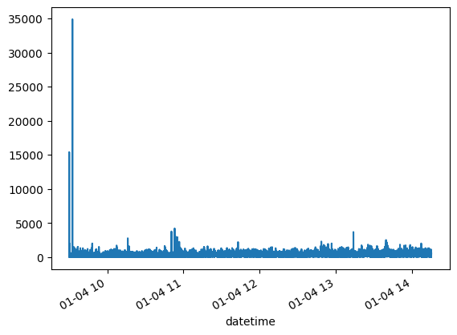
df[df.ask_size_1 >= 40_000]| time | event | order_id | size | price | direction | ask_price_1 | ask_size_1 | bid_price_1 | bid_size_1 | ask_price_2 | ask_size_2 | bid_price_2 | bid_size_2 | ask_price_3 | ask_size_3 | bid_price_3 | bid_size_3 | ask_price_4 | ask_size_4 | bid_price_4 | bid_size_4 | ask_price_5 | ask_size_5 | bid_price_5 | bid_size_5 | ask_price_6 | ask_size_6 | bid_price_6 | bid_size_6 | ask_price_7 | ask_size_7 | bid_price_7 | bid_size_7 | ask_price_8 | ask_size_8 | bid_price_8 | bid_size_8 | ask_price_9 | ask_size_9 | bid_price_9 | bid_size_9 | ask_price_10 | ask_size_10 | bid_price_10 | bid_size_10 | |
|---|---|---|---|---|---|---|---|---|---|---|---|---|---|---|---|---|---|---|---|---|---|---|---|---|---|---|---|---|---|---|---|---|---|---|---|---|---|---|---|---|---|---|---|---|---|---|
| datetime | ||||||||||||||||||||||||||||||||||||||||||||||
| 2021-01-05 09:30:02.284914908 | 34202.284915 | 1 | 7315742 | 100 | 52.00 | -1 | 52.00 | 40059.0 | 51.92 | 2.0 | 52.01 | 100.0 | 51.90 | 600.0 | 52.10 | 13.0 | 51.81 | 90.0 | 52.16 | 5.0 | 51.66 | 100.0 | 52.20 | 1017.0 | 51.50 | 523.0 | 52.26 | 100.0 | 51.44 | 2000.0 | 52.30 | 100.0 | 51.39 | 200.0 | 52.35 | 200.0 | 51.33 | 500.0 | 52.40 | 1000.0 | 51.32 | 30.0 | 52.50 | 1000.0 | 51.30 | 10.0 |
| 2021-01-05 09:30:02.284914908 | 34202.284915 | 1 | 8345038 | 100 | 52.00 | -1 | 52.00 | 40159.0 | 51.92 | 2.0 | 52.01 | 100.0 | 51.90 | 600.0 | 52.10 | 13.0 | 51.81 | 90.0 | 52.16 | 5.0 | 51.66 | 100.0 | 52.20 | 1017.0 | 51.50 | 523.0 | 52.26 | 100.0 | 51.44 | 2000.0 | 52.30 | 100.0 | 51.39 | 200.0 | 52.35 | 200.0 | 51.33 | 500.0 | 52.40 | 1000.0 | 51.32 | 30.0 | 52.50 | 1000.0 | 51.30 | 10.0 |
| 2021-01-05 09:30:02.284914908 | 34202.284915 | 1 | 8490406 | 50 | 52.00 | -1 | 52.00 | 40209.0 | 51.92 | 2.0 | 52.01 | 100.0 | 51.90 | 600.0 | 52.10 | 13.0 | 51.81 | 90.0 | 52.16 | 5.0 | 51.66 | 100.0 | 52.20 | 1017.0 | 51.50 | 523.0 | 52.26 | 100.0 | 51.44 | 2000.0 | 52.30 | 100.0 | 51.39 | 200.0 | 52.35 | 200.0 | 51.33 | 500.0 | 52.40 | 1000.0 | 51.32 | 30.0 | 52.50 | 1000.0 | 51.30 | 10.0 |
| 2021-01-05 09:30:02.284914908 | 34202.284915 | 1 | 8490410 | 101 | 52.00 | -1 | 52.00 | 40310.0 | 51.92 | 2.0 | 52.01 | 100.0 | 51.90 | 600.0 | 52.10 | 13.0 | 51.81 | 90.0 | 52.16 | 5.0 | 51.66 | 100.0 | 52.20 | 1017.0 | 51.50 | 523.0 | 52.26 | 100.0 | 51.44 | 2000.0 | 52.30 | 100.0 | 51.39 | 200.0 | 52.35 | 200.0 | 51.33 | 500.0 | 52.40 | 1000.0 | 51.32 | 30.0 | 52.50 | 1000.0 | 51.30 | 10.0 |
| 2021-01-05 09:30:02.284914908 | 34202.284915 | 1 | 8490414 | 80 | 52.00 | -1 | 52.00 | 40390.0 | 51.92 | 2.0 | 52.01 | 100.0 | 51.90 | 600.0 | 52.10 | 13.0 | 51.81 | 90.0 | 52.16 | 5.0 | 51.66 | 100.0 | 52.20 | 1017.0 | 51.50 | 523.0 | 52.26 | 100.0 | 51.44 | 2000.0 | 52.30 | 100.0 | 51.39 | 200.0 | 52.35 | 200.0 | 51.33 | 500.0 | 52.40 | 1000.0 | 51.32 | 30.0 | 52.50 | 1000.0 | 51.30 | 10.0 |
| 2021-01-05 09:30:02.284914908 | 34202.284915 | 1 | 9856982 | 50 | 52.00 | -1 | 52.00 | 40440.0 | 51.92 | 2.0 | 52.01 | 100.0 | 51.90 | 600.0 | 52.10 | 13.0 | 51.81 | 90.0 | 52.16 | 5.0 | 51.66 | 100.0 | 52.20 | 1017.0 | 51.50 | 523.0 | 52.26 | 100.0 | 51.44 | 2000.0 | 52.30 | 100.0 | 51.39 | 200.0 | 52.35 | 200.0 | 51.33 | 500.0 | 52.40 | 1000.0 | 51.32 | 30.0 | 52.50 | 1000.0 | 51.30 | 10.0 |
| 2021-01-05 09:30:02.284914908 | 34202.284915 | 1 | 10166442 | 20 | 52.00 | -1 | 52.00 | 40460.0 | 51.92 | 2.0 | 52.01 | 100.0 | 51.90 | 600.0 | 52.10 | 13.0 | 51.81 | 90.0 | 52.16 | 5.0 | 51.66 | 100.0 | 52.20 | 1017.0 | 51.50 | 523.0 | 52.26 | 100.0 | 51.44 | 2000.0 | 52.30 | 100.0 | 51.39 | 200.0 | 52.35 | 200.0 | 51.33 | 500.0 | 52.40 | 1000.0 | 51.32 | 30.0 | 52.50 | 1000.0 | 51.30 | 10.0 |
| 2021-01-05 09:30:02.284914908 | 34202.284915 | 1 | 10199754 | 12 | 52.00 | -1 | 52.00 | 40472.0 | 51.92 | 2.0 | 52.01 | 100.0 | 51.90 | 600.0 | 52.10 | 13.0 | 51.81 | 90.0 | 52.16 | 5.0 | 51.66 | 100.0 | 52.20 | 1017.0 | 51.50 | 523.0 | 52.26 | 100.0 | 51.44 | 2000.0 | 52.30 | 100.0 | 51.39 | 200.0 | 52.35 | 200.0 | 51.33 | 500.0 | 52.40 | 1000.0 | 51.32 | 30.0 | 52.50 | 1000.0 | 51.30 | 10.0 |
| 2021-01-05 09:30:02.284914908 | 34202.284915 | 1 | 12712170 | 4 | 52.00 | -1 | 52.00 | 40476.0 | 51.92 | 2.0 | 52.01 | 100.0 | 51.90 | 600.0 | 52.10 | 13.0 | 51.81 | 90.0 | 52.16 | 5.0 | 51.66 | 100.0 | 52.20 | 1017.0 | 51.50 | 523.0 | 52.26 | 100.0 | 51.44 | 2000.0 | 52.30 | 100.0 | 51.39 | 200.0 | 52.35 | 200.0 | 51.33 | 500.0 | 52.40 | 1000.0 | 51.32 | 30.0 | 52.50 | 1000.0 | 51.30 | 10.0 |
| 2021-01-05 09:30:02.284914908 | 34202.284915 | 1 | 12807926 | 1 | 52.00 | -1 | 52.00 | 40477.0 | 51.92 | 2.0 | 52.01 | 100.0 | 51.90 | 600.0 | 52.10 | 13.0 | 51.81 | 90.0 | 52.16 | 5.0 | 51.66 | 100.0 | 52.20 | 1017.0 | 51.50 | 523.0 | 52.26 | 100.0 | 51.44 | 2000.0 | 52.30 | 100.0 | 51.39 | 200.0 | 52.35 | 200.0 | 51.33 | 500.0 | 52.40 | 1000.0 | 51.32 | 30.0 | 52.50 | 1000.0 | 51.30 | 10.0 |
| 2021-01-05 09:30:02.284914908 | 34202.284915 | 1 | 15496002 | 20 | 52.00 | -1 | 52.00 | 40497.0 | 51.92 | 2.0 | 52.01 | 100.0 | 51.90 | 600.0 | 52.10 | 13.0 | 51.81 | 90.0 | 52.16 | 5.0 | 51.66 | 100.0 | 52.20 | 1017.0 | 51.50 | 523.0 | 52.26 | 100.0 | 51.44 | 2000.0 | 52.30 | 100.0 | 51.39 | 200.0 | 52.35 | 200.0 | 51.33 | 500.0 | 52.40 | 1000.0 | 51.32 | 30.0 | 52.50 | 1000.0 | 51.30 | 10.0 |
| 2021-01-05 09:30:02.284914908 | 34202.284915 | 1 | 16607122 | 55 | 52.00 | -1 | 52.00 | 40552.0 | 51.92 | 2.0 | 52.01 | 100.0 | 51.90 | 600.0 | 52.10 | 13.0 | 51.81 | 90.0 | 52.16 | 5.0 | 51.66 | 100.0 | 52.20 | 1017.0 | 51.50 | 523.0 | 52.26 | 100.0 | 51.44 | 2000.0 | 52.30 | 100.0 | 51.39 | 200.0 | 52.35 | 200.0 | 51.33 | 500.0 | 52.40 | 1000.0 | 51.32 | 30.0 | 52.50 | 1000.0 | 51.30 | 10.0 |
| 2021-01-05 09:30:02.284914908 | 34202.284915 | 1 | 8292458 | 1 | 52.01 | -1 | 52.00 | 40552.0 | 51.92 | 2.0 | 52.01 | 101.0 | 51.90 | 600.0 | 52.10 | 13.0 | 51.81 | 90.0 | 52.16 | 5.0 | 51.66 | 100.0 | 52.20 | 1017.0 | 51.50 | 523.0 | 52.26 | 100.0 | 51.44 | 2000.0 | 52.30 | 100.0 | 51.39 | 200.0 | 52.35 | 200.0 | 51.33 | 500.0 | 52.40 | 1000.0 | 51.32 | 30.0 | 52.50 | 1000.0 | 51.30 | 10.0 |
| 2021-01-05 09:30:02.284914908 | 34202.284915 | 1 | 10176730 | 3 | 52.02 | -1 | 52.00 | 40552.0 | 51.92 | 2.0 | 52.01 | 101.0 | 51.90 | 600.0 | 52.02 | 3.0 | 51.81 | 90.0 | 52.10 | 13.0 | 51.66 | 100.0 | 52.16 | 5.0 | 51.50 | 523.0 | 52.20 | 1017.0 | 51.44 | 2000.0 | 52.26 | 100.0 | 51.39 | 200.0 | 52.30 | 100.0 | 51.33 | 500.0 | 52.35 | 200.0 | 51.32 | 30.0 | 52.40 | 1000.0 | 51.30 | 10.0 |
| 2021-01-05 09:30:02.284914908 | 34202.284915 | 1 | 5157994 | 3 | 52.10 | -1 | 52.00 | 40552.0 | 51.92 | 2.0 | 52.01 | 101.0 | 51.90 | 600.0 | 52.02 | 3.0 | 51.81 | 90.0 | 52.10 | 16.0 | 51.66 | 100.0 | 52.16 | 5.0 | 51.50 | 523.0 | 52.20 | 1017.0 | 51.44 | 2000.0 | 52.26 | 100.0 | 51.39 | 200.0 | 52.30 | 100.0 | 51.33 | 500.0 | 52.35 | 200.0 | 51.32 | 30.0 | 52.40 | 1000.0 | 51.30 | 10.0 |
| 2021-01-05 09:30:02.284914908 | 34202.284915 | 1 | 7321898 | 50 | 52.13 | -1 | 52.00 | 40552.0 | 51.92 | 2.0 | 52.01 | 101.0 | 51.90 | 600.0 | 52.02 | 3.0 | 51.81 | 90.0 | 52.10 | 16.0 | 51.66 | 100.0 | 52.13 | 50.0 | 51.50 | 523.0 | 52.16 | 5.0 | 51.44 | 2000.0 | 52.20 | 1017.0 | 51.39 | 200.0 | 52.26 | 100.0 | 51.33 | 500.0 | 52.30 | 100.0 | 51.32 | 30.0 | 52.35 | 200.0 | 51.30 | 10.0 |
| 2021-01-05 09:30:02.284914908 | 34202.284915 | 1 | 9856986 | 50 | 52.19 | -1 | 52.00 | 40552.0 | 51.92 | 2.0 | 52.01 | 101.0 | 51.90 | 600.0 | 52.02 | 3.0 | 51.81 | 90.0 | 52.10 | 16.0 | 51.66 | 100.0 | 52.13 | 50.0 | 51.50 | 523.0 | 52.16 | 5.0 | 51.44 | 2000.0 | 52.19 | 50.0 | 51.39 | 200.0 | 52.20 | 1017.0 | 51.33 | 500.0 | 52.26 | 100.0 | 51.32 | 30.0 | 52.30 | 100.0 | 51.30 | 10.0 |
| 2021-01-05 09:30:02.284993899 | 34202.284994 | 1 | 20328842 | 100 | 52.00 | -1 | 52.00 | 40652.0 | 51.92 | 2.0 | 52.01 | 101.0 | 51.90 | 600.0 | 52.02 | 3.0 | 51.81 | 90.0 | 52.10 | 16.0 | 51.66 | 100.0 | 52.13 | 50.0 | 51.50 | 523.0 | 52.16 | 5.0 | 51.44 | 2000.0 | 52.19 | 50.0 | 51.39 | 200.0 | 52.20 | 1017.0 | 51.33 | 500.0 | 52.26 | 100.0 | 51.32 | 30.0 | 52.30 | 100.0 | 51.30 | 10.0 |
| 2021-01-05 09:30:02.285017572 | 34202.285018 | 3 | 20328842 | 100 | 52.00 | -1 | 52.00 | 40552.0 | 51.92 | 2.0 | 52.01 | 101.0 | 51.90 | 600.0 | 52.02 | 3.0 | 51.81 | 90.0 | 52.10 | 16.0 | 51.66 | 100.0 | 52.13 | 50.0 | 51.50 | 523.0 | 52.16 | 5.0 | 51.44 | 2000.0 | 52.19 | 50.0 | 51.39 | 200.0 | 52.20 | 1017.0 | 51.33 | 500.0 | 52.26 | 100.0 | 51.32 | 30.0 | 52.30 | 100.0 | 51.30 | 10.0 |
| 2021-01-05 09:30:02.356629832 | 34202.356630 | 5 | 0 | 50 | 51.93 | 1 | 52.00 | 40552.0 | 51.92 | 2.0 | 52.01 | 101.0 | 51.90 | 600.0 | 52.02 | 3.0 | 51.81 | 90.0 | 52.10 | 16.0 | 51.66 | 100.0 | 52.13 | 50.0 | 51.50 | 523.0 | 52.16 | 5.0 | 51.44 | 2000.0 | 52.19 | 50.0 | 51.39 | 200.0 | 52.20 | 1017.0 | 51.33 | 500.0 | 52.26 | 100.0 | 51.32 | 30.0 | 52.30 | 100.0 | 51.30 | 10.0 |
| 2021-01-05 09:30:02.356629832 | 34202.356630 | 4 | 20270410 | 1 | 51.92 | 1 | 52.00 | 40552.0 | 51.92 | 1.0 | 52.01 | 101.0 | 51.90 | 600.0 | 52.02 | 3.0 | 51.81 | 90.0 | 52.10 | 16.0 | 51.66 | 100.0 | 52.13 | 50.0 | 51.50 | 523.0 | 52.16 | 5.0 | 51.44 | 2000.0 | 52.19 | 50.0 | 51.39 | 200.0 | 52.20 | 1017.0 | 51.33 | 500.0 | 52.26 | 100.0 | 51.32 | 30.0 | 52.30 | 100.0 | 51.30 | 10.0 |
| 2021-01-05 09:30:02.356629832 | 34202.356630 | 4 | 20320738 | 1 | 51.92 | 1 | 52.00 | 40552.0 | 51.90 | 600.0 | 52.01 | 101.0 | 51.81 | 90.0 | 52.02 | 3.0 | 51.66 | 100.0 | 52.10 | 16.0 | 51.50 | 523.0 | 52.13 | 50.0 | 51.44 | 2000.0 | 52.16 | 5.0 | 51.39 | 200.0 | 52.19 | 50.0 | 51.33 | 500.0 | 52.20 | 1017.0 | 51.32 | 30.0 | 52.26 | 100.0 | 51.30 | 10.0 | 52.30 | 100.0 | 51.26 | 1005.0 |
| 2021-01-05 09:30:02.368268744 | 34202.368269 | 3 | 20339402 | 100 | 51.96 | -1 | 52.00 | 40552.0 | 51.81 | 90.0 | 52.01 | 101.0 | 51.66 | 100.0 | 52.02 | 3.0 | 51.50 | 523.0 | 52.10 | 16.0 | 51.44 | 2000.0 | 52.13 | 50.0 | 51.39 | 200.0 | 52.16 | 5.0 | 51.33 | 500.0 | 52.19 | 50.0 | 51.32 | 30.0 | 52.20 | 1017.0 | 51.30 | 10.0 | 52.26 | 100.0 | 51.26 | 1005.0 | 52.30 | 100.0 | 51.25 | 75.0 |
| 2021-01-05 09:30:02.387749812 | 34202.387750 | 5 | 0 | 100 | 51.90 | 1 | 52.00 | 40552.0 | 51.81 | 90.0 | 52.01 | 101.0 | 51.66 | 100.0 | 52.02 | 3.0 | 51.50 | 523.0 | 52.10 | 16.0 | 51.44 | 2000.0 | 52.13 | 50.0 | 51.39 | 200.0 | 52.16 | 5.0 | 51.33 | 500.0 | 52.19 | 50.0 | 51.32 | 30.0 | 52.20 | 1017.0 | 51.30 | 10.0 | 52.26 | 100.0 | 51.26 | 1005.0 | 52.30 | 100.0 | 51.25 | 75.0 |
| 2021-01-05 09:30:02.387749812 | 34202.387750 | 5 | 0 | 100 | 51.91 | 1 | 52.00 | 40552.0 | 51.81 | 90.0 | 52.01 | 101.0 | 51.66 | 100.0 | 52.02 | 3.0 | 51.50 | 523.0 | 52.10 | 16.0 | 51.44 | 2000.0 | 52.13 | 50.0 | 51.39 | 200.0 | 52.16 | 5.0 | 51.33 | 500.0 | 52.19 | 50.0 | 51.32 | 30.0 | 52.20 | 1017.0 | 51.30 | 10.0 | 52.26 | 100.0 | 51.26 | 1005.0 | 52.30 | 100.0 | 51.25 | 75.0 |
| 2021-01-05 09:30:02.387749812 | 34202.387750 | 5 | 0 | 50 | 51.91 | 1 | 52.00 | 40552.0 | 51.81 | 90.0 | 52.01 | 101.0 | 51.66 | 100.0 | 52.02 | 3.0 | 51.50 | 523.0 | 52.10 | 16.0 | 51.44 | 2000.0 | 52.13 | 50.0 | 51.39 | 200.0 | 52.16 | 5.0 | 51.33 | 500.0 | 52.19 | 50.0 | 51.32 | 30.0 | 52.20 | 1017.0 | 51.30 | 10.0 | 52.26 | 100.0 | 51.26 | 1005.0 | 52.30 | 100.0 | 51.25 | 75.0 |
| 2021-01-05 09:30:02.387749812 | 34202.387750 | 5 | 0 | 100 | 51.92 | 1 | 52.00 | 40552.0 | 51.81 | 90.0 | 52.01 | 101.0 | 51.66 | 100.0 | 52.02 | 3.0 | 51.50 | 523.0 | 52.10 | 16.0 | 51.44 | 2000.0 | 52.13 | 50.0 | 51.39 | 200.0 | 52.16 | 5.0 | 51.33 | 500.0 | 52.19 | 50.0 | 51.32 | 30.0 | 52.20 | 1017.0 | 51.30 | 10.0 | 52.26 | 100.0 | 51.26 | 1005.0 | 52.30 | 100.0 | 51.25 | 75.0 |
| 2021-01-05 09:30:02.387749812 | 34202.387750 | 5 | 0 | 100 | 51.94 | 1 | 52.00 | 40552.0 | 51.81 | 90.0 | 52.01 | 101.0 | 51.66 | 100.0 | 52.02 | 3.0 | 51.50 | 523.0 | 52.10 | 16.0 | 51.44 | 2000.0 | 52.13 | 50.0 | 51.39 | 200.0 | 52.16 | 5.0 | 51.33 | 500.0 | 52.19 | 50.0 | 51.32 | 30.0 | 52.20 | 1017.0 | 51.30 | 10.0 | 52.26 | 100.0 | 51.26 | 1005.0 | 52.30 | 100.0 | 51.25 | 75.0 |
| 2021-01-05 09:30:02.387749812 | 34202.387750 | 5 | 0 | 100 | 51.96 | 1 | 52.00 | 40552.0 | 51.81 | 90.0 | 52.01 | 101.0 | 51.66 | 100.0 | 52.02 | 3.0 | 51.50 | 523.0 | 52.10 | 16.0 | 51.44 | 2000.0 | 52.13 | 50.0 | 51.39 | 200.0 | 52.16 | 5.0 | 51.33 | 500.0 | 52.19 | 50.0 | 51.32 | 30.0 | 52.20 | 1017.0 | 51.30 | 10.0 | 52.26 | 100.0 | 51.26 | 1005.0 | 52.30 | 100.0 | 51.25 | 75.0 |
| 2021-01-05 09:30:02.387749812 | 34202.387750 | 5 | 0 | 100 | 51.97 | 1 | 52.00 | 40552.0 | 51.81 | 90.0 | 52.01 | 101.0 | 51.66 | 100.0 | 52.02 | 3.0 | 51.50 | 523.0 | 52.10 | 16.0 | 51.44 | 2000.0 | 52.13 | 50.0 | 51.39 | 200.0 | 52.16 | 5.0 | 51.33 | 500.0 | 52.19 | 50.0 | 51.32 | 30.0 | 52.20 | 1017.0 | 51.30 | 10.0 | 52.26 | 100.0 | 51.26 | 1005.0 | 52.30 | 100.0 | 51.25 | 75.0 |
| 2021-01-05 09:30:02.387749812 | 34202.387750 | 5 | 0 | 50 | 51.97 | 1 | 52.00 | 40552.0 | 51.81 | 90.0 | 52.01 | 101.0 | 51.66 | 100.0 | 52.02 | 3.0 | 51.50 | 523.0 | 52.10 | 16.0 | 51.44 | 2000.0 | 52.13 | 50.0 | 51.39 | 200.0 | 52.16 | 5.0 | 51.33 | 500.0 | 52.19 | 50.0 | 51.32 | 30.0 | 52.20 | 1017.0 | 51.30 | 10.0 | 52.26 | 100.0 | 51.26 | 1005.0 | 52.30 | 100.0 | 51.25 | 75.0 |
| 2021-01-05 09:30:02.476847786 | 34202.476848 | 1 | 20355358 | 200 | 51.32 | 1 | 52.00 | 40552.0 | 51.81 | 90.0 | 52.01 | 101.0 | 51.66 | 100.0 | 52.02 | 3.0 | 51.50 | 523.0 | 52.10 | 16.0 | 51.44 | 2000.0 | 52.13 | 50.0 | 51.39 | 200.0 | 52.16 | 5.0 | 51.33 | 500.0 | 52.19 | 50.0 | 51.32 | 230.0 | 52.20 | 1017.0 | 51.30 | 10.0 | 52.26 | 100.0 | 51.26 | 1005.0 | 52.30 | 100.0 | 51.25 | 75.0 |
| 2021-01-05 09:30:02.476849390 | 34202.476849 | 1 | 20355362 | 200 | 52.27 | -1 | 52.00 | 40552.0 | 51.81 | 90.0 | 52.01 | 101.0 | 51.66 | 100.0 | 52.02 | 3.0 | 51.50 | 523.0 | 52.10 | 16.0 | 51.44 | 2000.0 | 52.13 | 50.0 | 51.39 | 200.0 | 52.16 | 5.0 | 51.33 | 500.0 | 52.19 | 50.0 | 51.32 | 230.0 | 52.20 | 1017.0 | 51.30 | 10.0 | 52.26 | 100.0 | 51.26 | 1005.0 | 52.27 | 200.0 | 51.25 | 75.0 |
| 2021-01-05 09:30:02.490087932 | 34202.490088 | 3 | 20315190 | 100 | 52.26 | -1 | 52.00 | 40552.0 | 51.81 | 90.0 | 52.01 | 101.0 | 51.66 | 100.0 | 52.02 | 3.0 | 51.50 | 523.0 | 52.10 | 16.0 | 51.44 | 2000.0 | 52.13 | 50.0 | 51.39 | 200.0 | 52.16 | 5.0 | 51.33 | 500.0 | 52.19 | 50.0 | 51.32 | 230.0 | 52.20 | 1017.0 | 51.30 | 10.0 | 52.27 | 200.0 | 51.26 | 1005.0 | 52.30 | 100.0 | 51.25 | 75.0 |
| 2021-01-05 09:30:02.629170962 | 34202.629171 | 1 | 20375298 | 300 | 51.68 | 1 | 52.00 | 40552.0 | 51.81 | 90.0 | 52.01 | 101.0 | 51.68 | 300.0 | 52.02 | 3.0 | 51.66 | 100.0 | 52.10 | 16.0 | 51.50 | 523.0 | 52.13 | 50.0 | 51.44 | 2000.0 | 52.16 | 5.0 | 51.39 | 200.0 | 52.19 | 50.0 | 51.33 | 500.0 | 52.20 | 1017.0 | 51.32 | 230.0 | 52.27 | 200.0 | 51.30 | 10.0 | 52.30 | 100.0 | 51.26 | 1005.0 |
| 2021-01-05 09:30:02.665693889 | 34202.665694 | 1 | 20379158 | 300 | 51.68 | 1 | 52.00 | 40552.0 | 51.81 | 90.0 | 52.01 | 101.0 | 51.68 | 600.0 | 52.02 | 3.0 | 51.66 | 100.0 | 52.10 | 16.0 | 51.50 | 523.0 | 52.13 | 50.0 | 51.44 | 2000.0 | 52.16 | 5.0 | 51.39 | 200.0 | 52.19 | 50.0 | 51.33 | 500.0 | 52.20 | 1017.0 | 51.32 | 230.0 | 52.27 | 200.0 | 51.30 | 10.0 | 52.30 | 100.0 | 51.26 | 1005.0 |
| 2021-01-05 09:30:02.721729544 | 34202.721730 | 1 | 20386758 | 300 | 51.82 | 1 | 52.00 | 40552.0 | 51.82 | 300.0 | 52.01 | 101.0 | 51.81 | 90.0 | 52.02 | 3.0 | 51.68 | 600.0 | 52.10 | 16.0 | 51.66 | 100.0 | 52.13 | 50.0 | 51.50 | 523.0 | 52.16 | 5.0 | 51.44 | 2000.0 | 52.19 | 50.0 | 51.39 | 200.0 | 52.20 | 1017.0 | 51.33 | 500.0 | 52.27 | 200.0 | 51.32 | 230.0 | 52.30 | 100.0 | 51.30 | 10.0 |
| 2021-01-05 09:30:02.728007933 | 34202.728008 | 5 | 0 | 100 | 51.88 | 1 | 52.00 | 40552.0 | 51.82 | 300.0 | 52.01 | 101.0 | 51.81 | 90.0 | 52.02 | 3.0 | 51.68 | 600.0 | 52.10 | 16.0 | 51.66 | 100.0 | 52.13 | 50.0 | 51.50 | 523.0 | 52.16 | 5.0 | 51.44 | 2000.0 | 52.19 | 50.0 | 51.39 | 200.0 | 52.20 | 1017.0 | 51.33 | 500.0 | 52.27 | 200.0 | 51.32 | 230.0 | 52.30 | 100.0 | 51.30 | 10.0 |
| 2021-01-05 09:30:02.728007933 | 34202.728008 | 5 | 0 | 100 | 51.86 | 1 | 52.00 | 40552.0 | 51.82 | 300.0 | 52.01 | 101.0 | 51.81 | 90.0 | 52.02 | 3.0 | 51.68 | 600.0 | 52.10 | 16.0 | 51.66 | 100.0 | 52.13 | 50.0 | 51.50 | 523.0 | 52.16 | 5.0 | 51.44 | 2000.0 | 52.19 | 50.0 | 51.39 | 200.0 | 52.20 | 1017.0 | 51.33 | 500.0 | 52.27 | 200.0 | 51.32 | 230.0 | 52.30 | 100.0 | 51.30 | 10.0 |
| 2021-01-05 09:30:02.728007933 | 34202.728008 | 5 | 0 | 100 | 51.86 | 1 | 52.00 | 40552.0 | 51.82 | 300.0 | 52.01 | 101.0 | 51.81 | 90.0 | 52.02 | 3.0 | 51.68 | 600.0 | 52.10 | 16.0 | 51.66 | 100.0 | 52.13 | 50.0 | 51.50 | 523.0 | 52.16 | 5.0 | 51.44 | 2000.0 | 52.19 | 50.0 | 51.39 | 200.0 | 52.20 | 1017.0 | 51.33 | 500.0 | 52.27 | 200.0 | 51.32 | 230.0 | 52.30 | 100.0 | 51.30 | 10.0 |
| 2021-01-05 09:30:03.504531423 | 34203.504531 | 4 | 20387778 | 5 | 51.97 | -1 | 52.00 | 40832.0 | 51.92 | 62.0 | 52.01 | 101.0 | 51.86 | 300.0 | 52.02 | 3.0 | 51.84 | 200.0 | 52.10 | 16.0 | 51.77 | 100.0 | 52.13 | 50.0 | 51.67 | 100.0 | 52.16 | 5.0 | 51.50 | 523.0 | 52.19 | 50.0 | 51.44 | 2000.0 | 52.20 | 1017.0 | 51.39 | 200.0 | 52.27 | 200.0 | 51.33 | 500.0 | 52.30 | 100.0 | 51.32 | 230.0 |
| 2021-01-05 09:30:03.504531423 | 34203.504531 | 5 | 0 | 95 | 51.98 | 1 | 52.00 | 40832.0 | 51.92 | 62.0 | 52.01 | 101.0 | 51.86 | 300.0 | 52.02 | 3.0 | 51.84 | 200.0 | 52.10 | 16.0 | 51.77 | 100.0 | 52.13 | 50.0 | 51.67 | 100.0 | 52.16 | 5.0 | 51.50 | 523.0 | 52.19 | 50.0 | 51.44 | 2000.0 | 52.20 | 1017.0 | 51.39 | 200.0 | 52.27 | 200.0 | 51.33 | 500.0 | 52.30 | 100.0 | 51.32 | 230.0 |
| 2021-01-05 09:30:03.504560333 | 34203.504560 | 1 | 20518682 | 100 | 51.94 | 1 | 52.00 | 40832.0 | 51.94 | 100.0 | 52.01 | 101.0 | 51.92 | 62.0 | 52.02 | 3.0 | 51.86 | 300.0 | 52.10 | 16.0 | 51.84 | 200.0 | 52.13 | 50.0 | 51.77 | 100.0 | 52.16 | 5.0 | 51.67 | 100.0 | 52.19 | 50.0 | 51.50 | 523.0 | 52.20 | 1017.0 | 51.44 | 2000.0 | 52.27 | 200.0 | 51.39 | 200.0 | 52.30 | 100.0 | 51.33 | 500.0 |
| 2021-01-05 09:30:03.504817539 | 34203.504818 | 3 | 20516054 | 100 | 51.84 | 1 | 52.00 | 40832.0 | 51.94 | 100.0 | 52.01 | 101.0 | 51.92 | 62.0 | 52.02 | 3.0 | 51.86 | 300.0 | 52.10 | 16.0 | 51.84 | 100.0 | 52.13 | 50.0 | 51.77 | 100.0 | 52.16 | 5.0 | 51.67 | 100.0 | 52.19 | 50.0 | 51.50 | 523.0 | 52.20 | 1017.0 | 51.44 | 2000.0 | 52.27 | 200.0 | 51.39 | 200.0 | 52.30 | 100.0 | 51.33 | 500.0 |
| 2021-01-05 09:30:03.505022047 | 34203.505022 | 3 | 20517802 | 300 | 51.86 | 1 | 52.00 | 40832.0 | 51.94 | 100.0 | 52.01 | 101.0 | 51.92 | 62.0 | 52.02 | 3.0 | 51.84 | 100.0 | 52.10 | 16.0 | 51.77 | 100.0 | 52.13 | 50.0 | 51.67 | 100.0 | 52.16 | 5.0 | 51.50 | 523.0 | 52.19 | 50.0 | 51.44 | 2000.0 | 52.20 | 1017.0 | 51.39 | 200.0 | 52.27 | 200.0 | 51.33 | 500.0 | 52.30 | 100.0 | 51.32 | 230.0 |
| 2021-01-05 09:30:03.510243624 | 34203.510244 | 5 | 0 | 100 | 51.99 | 1 | 52.00 | 40832.0 | 51.94 | 100.0 | 52.01 | 101.0 | 51.92 | 62.0 | 52.02 | 3.0 | 51.84 | 100.0 | 52.10 | 16.0 | 51.77 | 100.0 | 52.13 | 50.0 | 51.67 | 100.0 | 52.16 | 5.0 | 51.50 | 523.0 | 52.19 | 50.0 | 51.44 | 2000.0 | 52.20 | 1017.0 | 51.39 | 200.0 | 52.27 | 200.0 | 51.33 | 500.0 | 52.30 | 100.0 | 51.32 | 230.0 |
| 2021-01-05 09:30:03.510243624 | 34203.510244 | 4 | 4301782 | 40 | 52.00 | -1 | 52.00 | 40792.0 | 51.94 | 100.0 | 52.01 | 101.0 | 51.92 | 62.0 | 52.02 | 3.0 | 51.84 | 100.0 | 52.10 | 16.0 | 51.77 | 100.0 | 52.13 | 50.0 | 51.67 | 100.0 | 52.16 | 5.0 | 51.50 | 523.0 | 52.19 | 50.0 | 51.44 | 2000.0 | 52.20 | 1017.0 | 51.39 | 200.0 | 52.27 | 200.0 | 51.33 | 500.0 | 52.30 | 100.0 | 51.32 | 230.0 |
| 2021-01-05 09:30:03.510244610 | 34203.510245 | 3 | 20516454 | 62 | 51.92 | 1 | 52.00 | 40792.0 | 51.94 | 100.0 | 52.01 | 101.0 | 51.84 | 100.0 | 52.02 | 3.0 | 51.77 | 100.0 | 52.10 | 16.0 | 51.67 | 100.0 | 52.13 | 50.0 | 51.50 | 523.0 | 52.16 | 5.0 | 51.44 | 2000.0 | 52.19 | 50.0 | 51.39 | 200.0 | 52.20 | 1017.0 | 51.33 | 500.0 | 52.27 | 200.0 | 51.32 | 230.0 | 52.30 | 100.0 | 51.30 | 10.0 |
| 2021-01-05 09:30:03.510505738 | 34203.510506 | 4 | 4301782 | 200 | 52.00 | -1 | 52.00 | 40592.0 | 51.94 | 100.0 | 52.01 | 101.0 | 51.84 | 100.0 | 52.02 | 3.0 | 51.77 | 100.0 | 52.10 | 16.0 | 51.67 | 100.0 | 52.13 | 50.0 | 51.50 | 523.0 | 52.16 | 5.0 | 51.44 | 2000.0 | 52.19 | 50.0 | 51.39 | 200.0 | 52.20 | 1017.0 | 51.33 | 500.0 | 52.27 | 200.0 | 51.32 | 230.0 | 52.30 | 100.0 | 51.30 | 10.0 |
| 2021-01-07 15:59:59.823431014 | 57599.823431 | 1 | 515892526 | 6100 | 51.87 | -1 | 51.87 | 41640.0 | 51.86 | 190.0 | 51.88 | 8867.0 | 51.81 | 305.0 | 51.89 | 5930.0 | 51.80 | 601.0 | 51.90 | 3500.0 | 51.78 | 310.0 | 51.91 | 2362.0 | 51.77 | 1700.0 | 51.92 | 200.0 | 51.76 | 1700.0 | 51.93 | 2400.0 | 51.75 | 100.0 | 51.94 | 500.0 | 51.74 | 102.0 | 51.96 | 600.0 | 51.73 | 700.0 | 51.97 | 2000.0 | 51.72 | 200.0 |
| 2021-01-07 15:59:59.823446081 | 57599.823446 | 1 | 515892530 | 6100 | 51.87 | -1 | 51.87 | 47740.0 | 51.86 | 190.0 | 51.88 | 8867.0 | 51.81 | 305.0 | 51.89 | 5930.0 | 51.80 | 601.0 | 51.90 | 3500.0 | 51.78 | 310.0 | 51.91 | 2362.0 | 51.77 | 1700.0 | 51.92 | 200.0 | 51.76 | 1700.0 | 51.93 | 2400.0 | 51.75 | 100.0 | 51.94 | 500.0 | 51.74 | 102.0 | 51.96 | 600.0 | 51.73 | 700.0 | 51.97 | 2000.0 | 51.72 | 200.0 |
| 2021-01-07 15:59:59.905487894 | 57599.905488 | 4 | 515224062 | 500 | 51.87 | -1 | 51.87 | 47240.0 | 51.86 | 190.0 | 51.88 | 8867.0 | 51.81 | 305.0 | 51.89 | 5930.0 | 51.80 | 601.0 | 51.90 | 3500.0 | 51.78 | 310.0 | 51.91 | 2362.0 | 51.77 | 1700.0 | 51.92 | 200.0 | 51.76 | 1700.0 | 51.93 | 2400.0 | 51.75 | 100.0 | 51.94 | 500.0 | 51.74 | 102.0 | 51.96 | 600.0 | 51.73 | 700.0 | 51.97 | 2000.0 | 51.72 | 200.0 |
| 2021-01-07 15:59:59.905487894 | 57599.905488 | 4 | 515235650 | 100 | 51.87 | -1 | 51.87 | 47140.0 | 51.86 | 190.0 | 51.88 | 8867.0 | 51.81 | 305.0 | 51.89 | 5930.0 | 51.80 | 601.0 | 51.90 | 3500.0 | 51.78 | 310.0 | 51.91 | 2362.0 | 51.77 | 1700.0 | 51.92 | 200.0 | 51.76 | 1700.0 | 51.93 | 2400.0 | 51.75 | 100.0 | 51.94 | 500.0 | 51.74 | 102.0 | 51.96 | 600.0 | 51.73 | 700.0 | 51.97 | 2000.0 | 51.72 | 200.0 |
| 2021-01-07 15:59:59.905487894 | 57599.905488 | 4 | 515269246 | 100 | 51.87 | -1 | 51.87 | 47040.0 | 51.86 | 190.0 | 51.88 | 8867.0 | 51.81 | 305.0 | 51.89 | 5930.0 | 51.80 | 601.0 | 51.90 | 3500.0 | 51.78 | 310.0 | 51.91 | 2362.0 | 51.77 | 1700.0 | 51.92 | 200.0 | 51.76 | 1700.0 | 51.93 | 2400.0 | 51.75 | 100.0 | 51.94 | 500.0 | 51.74 | 102.0 | 51.96 | 600.0 | 51.73 | 700.0 | 51.97 | 2000.0 | 51.72 | 200.0 |
| 2021-01-07 15:59:59.905531803 | 57599.905532 | 1 | 515899486 | 100 | 51.87 | -1 | 51.87 | 47140.0 | 51.86 | 190.0 | 51.88 | 8867.0 | 51.81 | 305.0 | 51.89 | 5930.0 | 51.80 | 601.0 | 51.90 | 3500.0 | 51.78 | 310.0 | 51.91 | 2362.0 | 51.77 | 1700.0 | 51.92 | 200.0 | 51.76 | 1700.0 | 51.93 | 2400.0 | 51.75 | 100.0 | 51.94 | 500.0 | 51.74 | 102.0 | 51.96 | 600.0 | 51.73 | 700.0 | 51.97 | 2000.0 | 51.72 | 200.0 |
| 2021-01-07 15:59:59.911895773 | 57599.911896 | 4 | 515882266 | 17 | 51.86 | 1 | 51.87 | 47140.0 | 51.86 | 173.0 | 51.88 | 8867.0 | 51.81 | 305.0 | 51.89 | 5930.0 | 51.80 | 601.0 | 51.90 | 3500.0 | 51.78 | 310.0 | 51.91 | 2362.0 | 51.77 | 1700.0 | 51.92 | 200.0 | 51.76 | 1700.0 | 51.93 | 2400.0 | 51.75 | 100.0 | 51.94 | 500.0 | 51.74 | 102.0 | 51.96 | 600.0 | 51.73 | 700.0 | 51.97 | 2000.0 | 51.72 | 200.0 |
all_symbols = arctic["2021"].list_symbols()
equities = list(set(equities).intersection(all_symbols))def get_trading_days(df):
return df.groupby(df.index.date).first().indexdef read_single_ticker_executions(ticker, date_range=None):
"""Read executions from database for single ticker."""
columns = [
"time",
"event",
"order_id",
"size",
"price",
"direction",
"ask_price_1",
"bid_price_1",
]
q = QueryBuilder()
# q = q[q.event.isin(EventGroup.EXECUTIONS.value)]
df = arctic_library.read(
symbol=ticker, query_builder=q, columns=columns, date_range=date_range
).data
df = df.assign(
ticker=ticker, mid=lambda _df: (_df["bid_price_1"] + _df["ask_price_1"]) / 2
).astype({"ticker": "category"})
return dfdef read_multiple_tickers_executions(tickers, date_range=None):
"""Multiple version of `read_single_ticker_executions`."""
return (
pd.concat(
read_single_ticker_executions(ticker, date_range) for ticker in tickers
)
.sort_index()
.astype({"ticker": "category"})
)def date_to_tuple(date: dt.date):
end_of_trading = dt.time(hour=16)
return (date, dt.datetime.combine(date, end_of_trading))
def get_datetime_tuples(start_date, end_date):
dates = pd.date_range(start=start_date, end=end_date, freq="D")
dates = [x.date() for x in dates]
date_tuples = [date_to_tuple(x) for x in dates]
return date_tuples
def timestamp_to_tuple(timestamp):
end_of_trading_day = pd.Timedelta(hours=16)
# could also return datetimes with .to_pydatetime
return (timestamp, timestamp + end_of_trading_day)
def get_timestamp_tuples(start_date, end_date):
dates = pd.date_range(start=start_date, end=end_date, freq="D")
date_tuples = [timestamp_to_tuple(x) for x in dates]
return date_tuplesOne day
def get_mids_for_etf(ticker, date_range):
"""Get only mids at a specified resample frequency."""
columns = [
"ask_price_1",
"bid_price_1",
]
q = QueryBuilder()
df = arctic_library.read(
symbol=ticker, query_builder=q, columns=columns, date_range=date_range
).data
df = df.assign(
ticker=ticker, mid=lambda _df: (_df["bid_price_1"] + _df["ask_price_1"]) / 2
).astype({"ticker": "category"})
resampled_mid = df.mid.resample("30S", label="right", closed="left").last()
return df, resampled_middef markout_to_int(markout: str, finest_resample: str = "30S"):
"""Maybe add stuff where checks this is almost an int"""
ratio = pd.Timedelta(markout) / pd.Timedelta(finest_resample)
if np.isclose(ratio, np.round(ratio), atol=1e-4):
return int(np.round(ratio))
else:
ValueError("Markouts must be multiples of finest resample frequency")
markout_to_int("1min")2def compute_log_returns(mid):
"""Compute mid price dataframe at various markouts and compute log returns for those markouts"""
df = pd.DataFrame(mid)
markouts_str = ["30S", "1min", "2min"]
Markout = namedtuple("Markout", ["str", "int"])
markouts = [Markout(x, markout_to_int(x)) for x in markouts_str]
for markout in markouts:
df[f"_{markout.str}"] = df.mid.shift(-markout.int)
df = df.resample("5min", label="right", closed="right").last()
# not sure how to drop all resampled buckets where there was a NaN before
# for now simply drop last row of resampled dataframe
df = df.iloc[:-1]
# now compute log returns
# markout_columns = df.filter(regex="^_").columns.to_list()
markout_columns = [f"_{markout.str}" for markout in markouts]
log_returns = np.log(df[markout_columns].divide(df.mid, axis=0))
# is it better to take differences? this feels like it should be better but doesn't run
# print('hi')
# breakpoint()
# log_returns = np.log(df[markout_columns]) - np.log(df.mid)
# markout_to_int(resample_freq)
contemp_log_returns = np.log(df.mid) - np.log(df.mid.shift(1))
log_returns["contemp"] = contemp_log_returns
# NOTE: better way to do this?
# resampling goes through non trading periods
log_returns.dropna(inplace=True)
return log_returnsdef compute_ofi(df):
"""Compute ofi. Times are right stamped in that you know the ofi at that time.
Closed is left here as it is unlikely to have a stamp exactly on the dot.
"""
ofi = (
df[["size", "direction"]]
.eval("signed_size = size * direction")
.drop(columns=["direction"])
.resample(resample_freq, label="right", closed="left")
.sum()
.between_time("09:29", "16:01")
.eval("ofi = signed_size / size")
.ofi.fillna(0)
)
return ofidef run_regressions(X, Y):
model = MultiOutputRegressor(LinearRegression(fit_intercept=False)).fit(X, Y)
results = []
for col, estimator in zip(Y.columns, model.estimators_):
results.append(
{
"target_markout": col,
"r2": estimator.score(X, Y[col]),
"coef": estimator.coef_,
"intercept": estimator.intercept_,
}
)
results_df = pd.DataFrame(results).set_index("target_markout")
return results_dfdef compute_neighbor_statistics(etf_executions_neighbors: pd.DataFrame):
neighbor_statistics = etf_executions_neighbors.filter(
regex="^_"
).notna().sum() / len(etf_executions_neighbors)
return neighbor_statisticsdf.columnsIndex(['time', 'event', 'order_id', 'size', 'price', 'direction',
'ask_price_1', 'bid_price_1', 'ticker', 'mid', '_250us_neighbors',
'_500us_neighbors', '_250us_distinct_tickers_ss_bf',
'_250us_distinct_tickers_ss_af', '_250us_distinct_tickers_os_bf',
'_250us_distinct_tickers_os_af', '_250us_notional_ss_bf',
'_250us_notional_ss_af', '_250us_notional_os_bf',
'_250us_notional_os_af', '_250us_num_trades_ss_bf',
'_250us_num_trades_ss_af', '_250us_num_trades_os_bf',
'_250us_num_trades_os_af', '_500us_distinct_tickers_ss_bf',
'_500us_distinct_tickers_ss_af', '_500us_distinct_tickers_os_bf',
'_500us_distinct_tickers_os_af', '_500us_notional_ss_bf',
'_500us_notional_ss_af', '_500us_notional_os_bf',
'_500us_notional_os_af', '_500us_num_trades_ss_bf',
'_500us_num_trades_ss_af', '_500us_num_trades_os_bf',
'_500us_num_trades_os_af', 'pnl_to_close', 'hit_ratio'],
dtype='object')quick_marginalize
quick_marginalize (df:pandas.core.frame.DataFrame)
Manual implementation but for all features.
def sparse_to_dense(df):
"""Convert all sparse columns to dense."""
sparse_columns = [
col for col in df.columns if isinstance(df[col].dtype, pd.SparseDtype)
]
df[sparse_columns] = df[sparse_columns].sparse.to_dense()
return dfdef keep_bins(s: pd.Series):
value_counts = s.value_counts().sort_index()
CUTOFF = 50
not_enough_data = value_counts < CUTOFF
up_to = not_enough_data.idxmax()
return up_todef add_pnl_columns(df):
df = df.copy(deep=True)
CLOSE_PRICE = (
df.query("direction == 1").iloc[-1].price
+ df.query("direction == -1").iloc[-1].price
) / 2
df = df.assign(
pnl_to_close_bps=lambda df_: (CLOSE_PRICE - df_.price)
/ df_.price
* 1e4
* df_.direction,
hit_ratio=lambda df_: ((df_.pnl_to_close_bps) > 0),
)
return dfPoolProcess for many dates
def dump_to_pickle(date):
"This is not useful..right?"
print(etfs)
print(equities)
equity_executions = read_multiple_tickers_executions(
tickers=equities, date_range=date
)
etf_executions = read_multiple_tickers_executions(tickers=etfs, date_range=date)
etf_executions_neighbors = add_neighbors(
etf_executions=etf_executions,
equity_executions=equity_executions,
tolerances=tolerances,
)
etf_executions_features = append_features(
etf_executions=etf_executions_neighbors, equity_executions=equity_executions
)
etf_executions_features_pnl = add_pnl_columns(etf_executions_features)
# for now just one etf
# if want to pickle
# assert len(etfs) == 1
# etf_name = etfs[0]
date_str = dt.datetime.combine(date[0], dt.datetime.min.time()).strftime("%Y-%m-%d")
# etf_executions_features_pnl.to_pickle(f"../features/{etf_name}_{date_str}")
print(f"done {date_str}")
return etf_executions_features_pnldef filter_to_existing_equities(equities):
existing_symbols = arctic_library.list_symbols()
return list(set(equities).intersection(set(existing_symbols)))
equities = filter_to_existing_equities(equities)
print(equities)from concurrent.futures import ProcessPoolExecutor, as_completed, wait
dates = NASDAQExchange().trading_days
dates = dates
dates = [date_to_tuple(x) for x in dates]
dates = dates[:70]
with ProcessPoolExecutor(max_workers=70) as executor:
dfs = list(executor.map(dump_to_pickle, dates))
df = pd.concat(dfs)
df.to_pickle("../features/SPY_all_10")df.to_pickle("../features/XLC_all")returns = compute_log_returns(df.mid)
returnscompute_ofi(df)X = compute_ofi(df)
Y = compute_log_returns(df.mid)
Y = Y.fillna(0)
X, Y = restrict_common_index(X, Y)
run_regressions(X, Y)Load with ArcticDB
closing_prices = df.resample("D").transform("last").pricedf["closing_price"] = closing_pricesdf.eval("pnl_to_close = (closing_price - price) * 1e4 * direction", inplace=True)
df.eval("hit_ratio = (pnl_to_close > 0)", inplace=True)summary_statistics = df.groupby(by="_500us_num_trades").agg(
ppt_mean=("pnl_to_close", "mean"),
ppt_std=("pnl_to_close", "std"),
hit_ratio=("hit_ratio", "mean"),
)import matplotlib.pyplot as plt
for col in summary_statistics:
summary_statistics[col].plot(title=col, kind="bar")
plt.show()Data analysis
df = pd.read_pickle("../features/XLC_all")
# df = df.rename(columns={'pnl_to_close':'pnl_to_close_bps', 'hit_ratio':'hit'})df = sparse_to_dense(df)df = quick_marginalize(df)df._500us_distinct_tickers[df._500us_distinct_tickers != 0].hist(bins=25)<Axes: >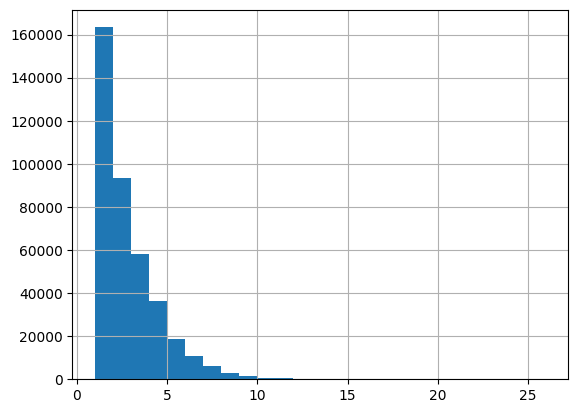
def add_decile_tags(df: pd.DataFrame) -> pd.DataFrame:
df = df.copy(deep=True)
feature_columns = [
col for col in df.columns if (col.startswith("_") and ("neighbors" not in col))
]
for col in feature_columns:
df[col + "_decile"] = 0
mask = df[col] != 0
df.loc[mask, col + "_decile"] = 1 + pd.qcut(
df.loc[mask, col], 10, labels=False, duplicates="drop"
)
return dfdf = add_decile_tags(df)df._500us_notional_decile.hist()<Axes: >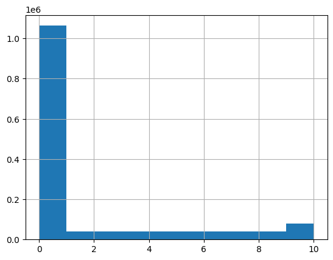
def pnl_groupby_summaries(df: pd.DataFrame) -> None:
decile_columns = df.filter(regex="decile")
for feature in decile_columns:
display(
df.groupby(feature).agg(
ppt_mean=("pnl_to_close", "mean"),
ppt_std=("pnl_to_close", "std"),
hit_ratio=("hit_ratio", "mean"),
)
)pnl_groupby_summaries(df)| ppt_mean | ppt_std | hit_ratio | |
|---|---|---|---|
| _250us_distinct_tickers_ss_bf_decile | |||
| 0 | -0.643133 | 61.770854 | 0.492517 |
| 1 | -0.812760 | 61.355928 | 0.488561 |
| 2 | -4.045905 | 56.422537 | 0.475604 |
| ppt_mean | ppt_std | hit_ratio | |
|---|---|---|---|
| _250us_distinct_tickers_ss_af_decile | |||
| 0 | -0.558275 | 61.898632 | 0.493068 |
| 1 | -1.550585 | 60.343574 | 0.483882 |
| 2 | -3.307661 | 53.813348 | 0.465782 |
| ppt_mean | ppt_std | hit_ratio | |
|---|---|---|---|
| _250us_distinct_tickers_os_bf_decile | |||
| 0 | -0.865763 | 61.721163 | 0.490340 |
| 1 | 3.411774 | 61.212043 | 0.526734 |
| 2 | 1.061222 | 48.415640 | 0.528889 |
| ppt_mean | ppt_std | hit_ratio | |
|---|---|---|---|
| _250us_distinct_tickers_os_af_decile | |||
| 0 | -0.800908 | 61.803316 | 0.490813 |
| 1 | 2.242885 | 58.917906 | 0.519649 |
| 2 | 6.493440 | 62.372479 | 0.521565 |
| ppt_mean | ppt_std | hit_ratio | |
|---|---|---|---|
| _250us_notional_ss_bf_decile | |||
| 0 | -0.643133 | 61.770854 | 0.492517 |
| 1 | -1.607361 | 58.570349 | 0.485398 |
| 2 | -0.202579 | 60.670307 | 0.491769 |
| 3 | 0.459644 | 62.920067 | 0.494993 |
| 4 | -0.878494 | 59.112991 | 0.489934 |
| 5 | 0.524772 | 60.142107 | 0.498243 |
| 6 | -0.307312 | 60.133286 | 0.492372 |
| 7 | -1.883595 | 60.466047 | 0.484558 |
| 8 | -0.396542 | 63.332272 | 0.497536 |
| 9 | -1.893847 | 63.643417 | 0.474785 |
| 10 | -2.946519 | 62.792145 | 0.471998 |
| ppt_mean | ppt_std | hit_ratio | |
|---|---|---|---|
| _250us_notional_ss_af_decile | |||
| 0 | -0.558275 | 61.898632 | 0.493068 |
| 1 | -2.834461 | 59.781180 | 0.479300 |
| 2 | -1.676672 | 59.687747 | 0.492979 |
| 3 | -0.519953 | 62.552460 | 0.487992 |
| 4 | -1.882139 | 59.100325 | 0.485865 |
| 5 | 0.651685 | 58.987017 | 0.502371 |
| 6 | -1.792374 | 60.077847 | 0.489332 |
| 7 | -1.196554 | 60.304223 | 0.485316 |
| 8 | -1.320801 | 58.007007 | 0.473067 |
| 9 | -3.139148 | 60.940594 | 0.468450 |
| 10 | -2.519271 | 61.252315 | 0.466683 |
| ppt_mean | ppt_std | hit_ratio | |
|---|---|---|---|
| _250us_notional_os_bf_decile | |||
| 0 | -0.865763 | 61.721163 | 0.490340 |
| 1 | 1.879327 | 59.058280 | 0.528149 |
| 2 | -1.010121 | 57.983218 | 0.498677 |
| 3 | 2.351129 | 59.422650 | 0.525898 |
| 4 | 1.636776 | 59.863851 | 0.522950 |
| 5 | 1.631330 | 61.765873 | 0.505833 |
| 6 | 2.777754 | 60.737137 | 0.524187 |
| 7 | 4.157988 | 64.720751 | 0.530263 |
| 8 | 5.333960 | 61.155336 | 0.529869 |
| 9 | 8.037108 | 64.221179 | 0.558027 |
| 10 | 6.992994 | 60.732431 | 0.543786 |
| ppt_mean | ppt_std | hit_ratio | |
|---|---|---|---|
| _250us_notional_os_af_decile | |||
| 0 | -0.800908 | 61.803316 | 0.490813 |
| 1 | 1.059336 | 55.607049 | 0.505418 |
| 2 | -1.294143 | 58.499800 | 0.499650 |
| 3 | 6.056673 | 60.348068 | 0.555148 |
| 4 | 1.044281 | 63.378526 | 0.513116 |
| 5 | 1.258529 | 57.722351 | 0.511701 |
| 6 | -1.118839 | 59.609804 | 0.491517 |
| 7 | 1.821312 | 60.444207 | 0.517127 |
| 8 | 4.910002 | 55.860535 | 0.531212 |
| 9 | 3.334583 | 58.881109 | 0.536351 |
| 10 | 6.098730 | 58.564813 | 0.535583 |
| ppt_mean | ppt_std | hit_ratio | |
|---|---|---|---|
| _250us_num_trades_ss_bf_decile | |||
| 0 | -0.643133 | 61.770854 | 0.492517 |
| 1 | -0.238655 | 59.964180 | 0.492070 |
| 2 | -0.698099 | 60.716125 | 0.489884 |
| 3 | -1.615163 | 61.585581 | 0.479361 |
| 4 | -0.305285 | 62.194145 | 0.500743 |
| 5 | -1.533414 | 62.873323 | 0.481745 |
| 6 | -4.590517 | 65.550885 | 0.462319 |
| ppt_mean | ppt_std | hit_ratio | |
|---|---|---|---|
| _250us_num_trades_ss_af_decile | |||
| 0 | -0.558275 | 61.898632 | 0.493068 |
| 1 | -1.224653 | 59.724444 | 0.487099 |
| 2 | -1.687725 | 61.219458 | 0.480627 |
| 3 | -1.162881 | 59.974689 | 0.488891 |
| 4 | -2.528587 | 59.858981 | 0.470873 |
| 5 | -4.276536 | 61.198019 | 0.460205 |
| ppt_mean | ppt_std | hit_ratio | |
|---|---|---|---|
| _250us_num_trades_os_bf_decile | |||
| 0 | -0.865763 | 61.721163 | 0.490340 |
| 1 | 3.258337 | 59.520706 | 0.525802 |
| 2 | 2.942281 | 61.704734 | 0.522799 |
| 3 | 3.340639 | 64.642508 | 0.530925 |
| 4 | 4.895420 | 67.398296 | 0.534227 |
| ppt_mean | ppt_std | hit_ratio | |
|---|---|---|---|
| _250us_num_trades_os_af_decile | |||
| 0 | -0.800908 | 61.803316 | 0.490813 |
| 1 | 2.047822 | 58.137372 | 0.515397 |
| 2 | 1.759318 | 61.019819 | 0.535476 |
| 3 | 5.163472 | 58.253835 | 0.548089 |
| 4 | 3.474080 | 64.121195 | 0.519828 |
| ppt_mean | ppt_std | hit_ratio | |
|---|---|---|---|
| _500us_distinct_tickers_ss_bf_decile | |||
| 0 | -0.631044 | 61.876847 | 0.492849 |
| 1 | -0.779497 | 61.237509 | 0.488243 |
| 2 | -2.715008 | 54.799858 | 0.481268 |
| ppt_mean | ppt_std | hit_ratio | |
|---|---|---|---|
| _500us_distinct_tickers_ss_af_decile | |||
| 0 | -0.530377 | 62.050068 | 0.493392 |
| 1 | -1.256457 | 60.183095 | 0.485887 |
| 2 | -3.746779 | 55.287757 | 0.466834 |
| ppt_mean | ppt_std | hit_ratio | |
|---|---|---|---|
| _500us_distinct_tickers_os_bf_decile | |||
| 0 | -0.955352 | 61.775687 | 0.489621 |
| 1 | 3.367115 | 60.746194 | 0.525280 |
| 2 | 2.646373 | 46.972708 | 0.543316 |
| ppt_mean | ppt_std | hit_ratio | |
|---|---|---|---|
| _500us_distinct_tickers_os_af_decile | |||
| 0 | -0.856681 | 61.841239 | 0.490261 |
| 1 | 2.167623 | 59.501224 | 0.519928 |
| 2 | 2.670279 | 52.618826 | 0.494295 |
| ppt_mean | ppt_std | hit_ratio | |
|---|---|---|---|
| _500us_notional_ss_bf_decile | |||
| 0 | -0.631044 | 61.876847 | 0.492849 |
| 1 | -0.919583 | 57.741603 | 0.489872 |
| 2 | -0.322816 | 63.998686 | 0.494706 |
| 3 | -0.436388 | 62.511782 | 0.488534 |
| 4 | 0.291303 | 59.657833 | 0.498777 |
| 5 | -0.378357 | 59.337204 | 0.490922 |
| 6 | -0.268779 | 59.909848 | 0.494324 |
| 7 | -1.831407 | 59.007541 | 0.477963 |
| 8 | 0.530948 | 61.526356 | 0.495012 |
| 9 | -2.157468 | 62.839037 | 0.477545 |
| 10 | -3.459582 | 61.809048 | 0.470608 |
| ppt_mean | ppt_std | hit_ratio | |
|---|---|---|---|
| _500us_notional_ss_af_decile | |||
| 0 | -0.530377 | 62.050068 | 0.493392 |
| 1 | -2.413272 | 59.922772 | 0.486446 |
| 2 | -1.585356 | 59.684135 | 0.486037 |
| 3 | -1.609443 | 60.689192 | 0.487798 |
| 4 | -0.297070 | 58.898632 | 0.497876 |
| 5 | -0.319447 | 59.990132 | 0.493737 |
| 6 | -0.547390 | 59.536933 | 0.495046 |
| 7 | -0.580197 | 59.334533 | 0.486146 |
| 8 | -2.790066 | 58.038621 | 0.471752 |
| 9 | -1.739835 | 60.676215 | 0.477906 |
| 10 | -2.677771 | 61.197072 | 0.460859 |
| ppt_mean | ppt_std | hit_ratio | |
|---|---|---|---|
| _500us_notional_os_bf_decile | |||
| 0 | -0.955352 | 61.775687 | 0.489621 |
| 1 | 0.878289 | 59.304286 | 0.512208 |
| 2 | 0.531704 | 57.798467 | 0.518673 |
| 3 | 1.218857 | 59.089928 | 0.514667 |
| 4 | 2.426727 | 59.789895 | 0.528364 |
| 5 | 2.835986 | 60.323044 | 0.522732 |
| 6 | 2.523363 | 61.007708 | 0.520747 |
| 7 | 5.998150 | 61.729782 | 0.536164 |
| 8 | 3.395071 | 61.110598 | 0.523200 |
| 9 | 7.043703 | 62.970041 | 0.540587 |
| 10 | 6.623635 | 60.445671 | 0.540373 |
| ppt_mean | ppt_std | hit_ratio | |
|---|---|---|---|
| _500us_notional_os_af_decile | |||
| 0 | -0.856681 | 61.841239 | 0.490261 |
| 1 | 0.557025 | 56.218909 | 0.497423 |
| 2 | 0.529107 | 60.984008 | 0.505389 |
| 3 | 1.936321 | 58.918019 | 0.532927 |
| 4 | 0.329554 | 64.498620 | 0.516046 |
| 5 | 0.933136 | 58.690229 | 0.501524 |
| 6 | 2.259697 | 57.958455 | 0.523492 |
| 7 | 3.354150 | 59.645778 | 0.528530 |
| 8 | 2.248975 | 57.914844 | 0.517985 |
| 9 | 3.337420 | 58.288166 | 0.535091 |
| 10 | 6.366916 | 59.017748 | 0.531927 |
| ppt_mean | ppt_std | hit_ratio | |
|---|---|---|---|
| _500us_num_trades_ss_bf_decile | |||
| 0 | -0.631044 | 61.876847 | 0.492849 |
| 1 | -0.454989 | 60.118915 | 0.490237 |
| 2 | -0.418848 | 61.038676 | 0.493222 |
| 3 | -0.768238 | 60.872930 | 0.488464 |
| 4 | 0.036106 | 61.070397 | 0.493534 |
| 5 | -0.350965 | 62.047722 | 0.493732 |
| 6 | -1.308659 | 60.814645 | 0.486699 |
| 7 | -4.521073 | 62.717787 | 0.459659 |
| ppt_mean | ppt_std | hit_ratio | |
|---|---|---|---|
| _500us_num_trades_ss_af_decile | |||
| 0 | -0.530377 | 62.050068 | 0.493392 |
| 1 | -1.268697 | 59.373215 | 0.489180 |
| 2 | -1.224155 | 59.625411 | 0.481525 |
| 3 | -1.022584 | 61.107965 | 0.487728 |
| 4 | -0.681189 | 60.528049 | 0.489369 |
| 5 | -1.329320 | 59.330652 | 0.482285 |
| 6 | -4.449813 | 60.671548 | 0.452751 |
| ppt_mean | ppt_std | hit_ratio | |
|---|---|---|---|
| _500us_num_trades_os_bf_decile | |||
| 0 | -0.955352 | 61.775687 | 0.489621 |
| 1 | 3.234752 | 58.724422 | 0.524910 |
| 2 | 2.877069 | 60.792566 | 0.518821 |
| 3 | 2.644395 | 63.800922 | 0.530985 |
| 4 | 4.042088 | 62.450491 | 0.529729 |
| 5 | 4.624610 | 66.430469 | 0.532577 |
| ppt_mean | ppt_std | hit_ratio | |
|---|---|---|---|
| _500us_num_trades_os_af_decile | |||
| 0 | -0.856681 | 61.841239 | 0.490261 |
| 1 | 2.001831 | 58.755650 | 0.515055 |
| 2 | 1.804954 | 60.104695 | 0.520194 |
| 3 | 2.274179 | 60.081775 | 0.534969 |
| 4 | 4.023642 | 61.206150 | 0.529127 |
| ppt_mean | ppt_std | hit_ratio | |
|---|---|---|---|
| _250us_num_trades_decile | |||
| 0 | -0.624363 | 62.073346 | 0.492292 |
| 1 | -0.771295 | 59.199156 | 0.491436 |
| 2 | -0.305855 | 59.160893 | 0.498517 |
| 3 | -0.780987 | 60.360073 | 0.488227 |
| 4 | -0.786848 | 59.707173 | 0.494127 |
| 5 | -0.901237 | 61.304476 | 0.486110 |
| 6 | -1.394785 | 62.053705 | 0.487051 |
| 7 | -1.862932 | 63.895073 | 0.482005 |
| ppt_mean | ppt_std | hit_ratio | |
|---|---|---|---|
| _250us_num_trades_ss_decile | |||
| 0 | -0.583798 | 61.985974 | 0.492952 |
| 1 | -0.622676 | 59.481844 | 0.491386 |
| 2 | -0.508815 | 60.361324 | 0.493580 |
| 3 | -0.882116 | 59.136526 | 0.487251 |
| 4 | -0.851718 | 59.018502 | 0.494147 |
| 5 | -0.926985 | 61.954130 | 0.488736 |
| 6 | -1.763713 | 62.105273 | 0.480357 |
| 7 | -4.007048 | 63.285106 | 0.462489 |
| ppt_mean | ppt_std | hit_ratio | |
|---|---|---|---|
| _250us_num_trades_os_decile | |||
| 0 | -0.929842 | 61.809814 | 0.489757 |
| 1 | 2.374314 | 58.810657 | 0.516661 |
| 2 | 2.998964 | 60.442060 | 0.527387 |
| 3 | 3.344102 | 61.183125 | 0.545944 |
| 4 | 3.038497 | 60.106806 | 0.535006 |
| 5 | 4.635688 | 67.032428 | 0.521683 |
| ppt_mean | ppt_std | hit_ratio | |
|---|---|---|---|
| _250us_num_trades_af_decile | |||
| 0 | -0.622813 | 61.971757 | 0.492287 |
| 1 | -0.817132 | 59.319436 | 0.492457 |
| 2 | -1.253124 | 59.864659 | 0.490510 |
| 3 | 0.021069 | 61.741601 | 0.492768 |
| 4 | -1.182568 | 60.471182 | 0.488137 |
| 5 | -1.603393 | 59.761835 | 0.486254 |
| 6 | -2.526486 | 61.173489 | 0.473428 |
| ppt_mean | ppt_std | hit_ratio | |
|---|---|---|---|
| _250us_num_trades_bf_decile | |||
| 0 | -0.664331 | 61.829221 | 0.492096 |
| 1 | -0.474160 | 59.376197 | 0.493041 |
| 2 | -0.504745 | 60.225088 | 0.492815 |
| 3 | -1.437510 | 61.429477 | 0.485275 |
| 4 | 0.241796 | 61.766851 | 0.500943 |
| 5 | -1.043944 | 62.469156 | 0.490358 |
| 6 | -1.752811 | 67.079999 | 0.483199 |
| ppt_mean | ppt_std | hit_ratio | |
|---|---|---|---|
| _250us_notional_decile | |||
| 0 | -0.624363 | 62.073346 | 0.492292 |
| 1 | -1.761678 | 60.174418 | 0.483405 |
| 2 | -0.587186 | 59.107845 | 0.498931 |
| 3 | -0.562783 | 61.054809 | 0.496260 |
| 4 | -1.172567 | 59.212871 | 0.487761 |
| 5 | 0.328366 | 59.735689 | 0.500334 |
| 6 | -0.805646 | 60.452556 | 0.490416 |
| 7 | -1.150675 | 58.426758 | 0.487176 |
| 8 | -0.985196 | 60.300657 | 0.495292 |
| 9 | -0.796025 | 60.643618 | 0.483119 |
| 10 | -1.383282 | 63.000604 | 0.483453 |
| ppt_mean | ppt_std | hit_ratio | |
|---|---|---|---|
| _250us_notional_ss_decile | |||
| 0 | -0.583798 | 61.985974 | 0.492952 |
| 1 | -2.593199 | 59.694679 | 0.480081 |
| 2 | -0.474464 | 59.605587 | 0.493179 |
| 3 | -0.356999 | 61.088360 | 0.493008 |
| 4 | -0.532972 | 59.912918 | 0.492108 |
| 5 | -0.054631 | 59.562982 | 0.498121 |
| 6 | 0.277186 | 59.295282 | 0.500432 |
| 7 | -1.445407 | 58.426776 | 0.482279 |
| 8 | -1.452874 | 61.897539 | 0.489251 |
| 9 | -1.438291 | 61.036911 | 0.474517 |
| 10 | -2.950965 | 63.156705 | 0.471510 |
| ppt_mean | ppt_std | hit_ratio | |
|---|---|---|---|
| _250us_notional_os_decile | |||
| 0 | -0.929842 | 61.809814 | 0.489757 |
| 1 | 0.651053 | 57.549163 | 0.496467 |
| 2 | 0.633741 | 59.928029 | 0.506411 |
| 3 | 2.459156 | 60.192744 | 0.537383 |
| 4 | 0.270969 | 59.628485 | 0.503838 |
| 5 | 1.614457 | 58.817251 | 0.506260 |
| 6 | 2.105182 | 61.321893 | 0.522257 |
| 7 | 2.762148 | 62.013939 | 0.519637 |
| 8 | 4.511833 | 58.598578 | 0.534283 |
| 9 | 5.557047 | 60.705294 | 0.552326 |
| 10 | 7.107907 | 61.111440 | 0.540800 |
| ppt_mean | ppt_std | hit_ratio | |
|---|---|---|---|
| _250us_notional_af_decile | |||
| 0 | -0.622813 | 61.971757 | 0.492287 |
| 1 | -1.971418 | 59.453257 | 0.483909 |
| 2 | -0.750454 | 59.641926 | 0.499896 |
| 3 | 0.302845 | 61.484574 | 0.500570 |
| 4 | -1.847975 | 59.435802 | 0.489428 |
| 5 | 0.472649 | 58.862096 | 0.499119 |
| 6 | -1.783717 | 60.445102 | 0.492045 |
| 7 | -0.741502 | 60.202519 | 0.490102 |
| 8 | -1.136949 | 58.666341 | 0.481946 |
| 9 | -1.569738 | 59.665126 | 0.482171 |
| 10 | -1.405234 | 60.765520 | 0.478022 |
| ppt_mean | ppt_std | hit_ratio | |
|---|---|---|---|
| _250us_notional_bf_decile | |||
| 0 | -0.664331 | 61.829221 | 0.492096 |
| 1 | -1.299757 | 59.059844 | 0.495386 |
| 2 | -0.405030 | 60.212036 | 0.494756 |
| 3 | -0.276251 | 62.615726 | 0.492496 |
| 4 | -1.141867 | 58.157430 | 0.487067 |
| 5 | 0.305562 | 60.263198 | 0.497576 |
| 6 | -0.736978 | 60.128309 | 0.494151 |
| 7 | -1.632006 | 60.556523 | 0.482265 |
| 8 | -0.244806 | 62.535670 | 0.496225 |
| 9 | -1.186544 | 62.135430 | 0.484081 |
| 10 | -0.986609 | 63.429730 | 0.486810 |
| ppt_mean | ppt_std | hit_ratio | |
|---|---|---|---|
| _250us_distinct_tickers_decile | |||
| 0 | -0.624363 | 62.073346 | 0.492292 |
| 1 | -1.227008 | 59.633737 | 0.488654 |
| 2 | -0.224429 | 62.098079 | 0.493227 |
| 3 | -0.876075 | 62.277790 | 0.491838 |
| 4 | 1.765962 | 60.542632 | 0.507381 |
| ppt_mean | ppt_std | hit_ratio | |
|---|---|---|---|
| _250us_distinct_tickers_ss_decile | |||
| 0 | -0.583798 | 61.985974 | 0.492952 |
| 1 | -0.774826 | 60.053791 | 0.490555 |
| 2 | -1.641327 | 61.941860 | 0.477445 |
| 3 | -4.015630 | 61.446165 | 0.468617 |
| ppt_mean | ppt_std | hit_ratio | |
|---|---|---|---|
| _250us_distinct_tickers_os_decile | |||
| 0 | -0.929842 | 61.809814 | 0.489757 |
| 1 | 2.533058 | 59.730576 | 0.520881 |
| 2 | 5.133906 | 63.005490 | 0.532945 |
| ppt_mean | ppt_std | hit_ratio | |
|---|---|---|---|
| _250us_distinct_tickers_af_decile | |||
| 0 | -0.622813 | 61.971757 | 0.492287 |
| 1 | -1.219873 | 59.934065 | 0.488896 |
| 2 | 0.745686 | 59.213199 | 0.498069 |
| ppt_mean | ppt_std | hit_ratio | |
|---|---|---|---|
| _250us_distinct_tickers_bf_decile | |||
| 0 | -0.664331 | 61.829221 | 0.492096 |
| 1 | -1.205755 | 60.666768 | 0.487608 |
| 2 | 2.404990 | 62.575532 | 0.512286 |
| 3 | 4.268441 | 63.900911 | 0.537923 |
| ppt_mean | ppt_std | hit_ratio | |
|---|---|---|---|
| _500us_num_trades_decile | |||
| 0 | -0.620705 | 62.241559 | 0.492495 |
| 1 | -0.794000 | 59.759304 | 0.492391 |
| 2 | -0.552811 | 59.919713 | 0.492704 |
| 3 | -1.243655 | 60.074425 | 0.485892 |
| 4 | -0.369341 | 59.229205 | 0.494718 |
| 5 | -0.232508 | 61.109111 | 0.490330 |
| 6 | -0.400918 | 59.191122 | 0.494637 |
| 7 | -1.373648 | 60.658896 | 0.487495 |
| 8 | -1.981550 | 63.073542 | 0.478495 |
| ppt_mean | ppt_std | hit_ratio | |
|---|---|---|---|
| _500us_num_trades_ss_decile | |||
| 0 | -0.561270 | 62.172412 | 0.493420 |
| 1 | -0.848067 | 59.671323 | 0.489566 |
| 2 | 0.020212 | 60.087895 | 0.497073 |
| 3 | -1.380355 | 59.710729 | 0.486354 |
| 4 | 0.893635 | 59.555662 | 0.507159 |
| 5 | -1.227093 | 60.816321 | 0.485904 |
| 6 | -0.353219 | 60.514143 | 0.490522 |
| 7 | -1.176014 | 61.057991 | 0.485871 |
| 8 | -4.356785 | 61.385492 | 0.455455 |
| ppt_mean | ppt_std | hit_ratio | |
|---|---|---|---|
| _500us_num_trades_os_decile | |||
| 0 | -1.046610 | 61.879410 | 0.488671 |
| 1 | 2.598178 | 58.831561 | 0.520584 |
| 2 | 1.388084 | 59.694840 | 0.507341 |
| 3 | 2.737855 | 59.678416 | 0.530951 |
| 4 | 3.696714 | 59.989764 | 0.533094 |
| 5 | 3.759433 | 61.863665 | 0.536187 |
| 6 | 4.039673 | 64.946298 | 0.526656 |
| ppt_mean | ppt_std | hit_ratio | |
|---|---|---|---|
| _500us_num_trades_af_decile | |||
| 0 | -0.587478 | 62.125014 | 0.492544 |
| 1 | -1.113409 | 59.367993 | 0.491887 |
| 2 | -0.997767 | 58.838169 | 0.487190 |
| 3 | -0.869232 | 60.666104 | 0.489730 |
| 4 | -0.052012 | 60.649465 | 0.493777 |
| 5 | -0.762628 | 59.659274 | 0.493069 |
| 6 | -2.445965 | 61.347069 | 0.468964 |
| ppt_mean | ppt_std | hit_ratio | |
|---|---|---|---|
| _500us_num_trades_bf_decile | |||
| 0 | -0.668649 | 61.925253 | 0.492249 |
| 1 | -0.538032 | 59.952511 | 0.491761 |
| 2 | -0.299802 | 60.643783 | 0.496218 |
| 3 | -1.287512 | 60.394182 | 0.485155 |
| 4 | -0.212191 | 60.688700 | 0.494354 |
| 5 | -1.146913 | 61.073612 | 0.484358 |
| 6 | -0.092052 | 61.518328 | 0.497092 |
| 7 | -2.373215 | 63.827114 | 0.479336 |
| ppt_mean | ppt_std | hit_ratio | |
|---|---|---|---|
| _500us_notional_decile | |||
| 0 | -0.620705 | 62.241559 | 0.492495 |
| 1 | -1.737734 | 59.449735 | 0.486342 |
| 2 | -1.074176 | 62.670226 | 0.492326 |
| 3 | 0.025192 | 60.625263 | 0.499924 |
| 4 | -0.614110 | 60.044256 | 0.496633 |
| 5 | -0.801568 | 59.466447 | 0.493838 |
| 6 | -0.111053 | 58.976801 | 0.496239 |
| 7 | -1.006608 | 57.990565 | 0.481425 |
| 8 | -0.502523 | 59.481311 | 0.492872 |
| 9 | -0.756644 | 61.013727 | 0.485783 |
| 10 | -1.766824 | 62.147439 | 0.479265 |
| ppt_mean | ppt_std | hit_ratio | |
|---|---|---|---|
| _500us_notional_ss_decile | |||
| 0 | -0.561270 | 62.172412 | 0.493420 |
| 1 | -1.863055 | 58.888619 | 0.486284 |
| 2 | -1.249291 | 62.612207 | 0.488324 |
| 3 | 0.189270 | 60.810309 | 0.496620 |
| 4 | -0.328625 | 59.565858 | 0.498071 |
| 5 | -0.872963 | 59.632551 | 0.492663 |
| 6 | 0.384466 | 59.283316 | 0.497085 |
| 7 | -1.646605 | 57.275756 | 0.480803 |
| 8 | -0.432175 | 60.536473 | 0.485001 |
| 9 | -1.196030 | 61.456614 | 0.480045 |
| 10 | -3.407939 | 61.671914 | 0.468860 |
| ppt_mean | ppt_std | hit_ratio | |
|---|---|---|---|
| _500us_notional_os_decile | |||
| 0 | -1.046610 | 61.879410 | 0.488671 |
| 1 | 0.608009 | 57.868357 | 0.502373 |
| 2 | 1.213149 | 58.919654 | 0.515229 |
| 3 | 0.964962 | 62.022977 | 0.516856 |
| 4 | 1.005730 | 60.088004 | 0.519020 |
| 5 | 2.178224 | 59.371388 | 0.516182 |
| 6 | 3.162189 | 60.533363 | 0.528195 |
| 7 | 3.360963 | 59.145323 | 0.520612 |
| 8 | 3.825312 | 59.067154 | 0.533107 |
| 9 | 4.677211 | 59.846586 | 0.536342 |
| 10 | 6.527061 | 61.477747 | 0.536865 |
| ppt_mean | ppt_std | hit_ratio | |
|---|---|---|---|
| _500us_notional_af_decile | |||
| 0 | -0.587478 | 62.125014 | 0.492544 |
| 1 | -1.903612 | 59.641853 | 0.486272 |
| 2 | -1.577016 | 60.150047 | 0.491786 |
| 3 | -1.143377 | 61.440408 | 0.495120 |
| 4 | -0.107671 | 59.068153 | 0.498640 |
| 5 | -0.235300 | 59.691610 | 0.497094 |
| 6 | -0.917223 | 59.612335 | 0.495474 |
| 7 | -0.553782 | 59.167483 | 0.488227 |
| 8 | -2.063076 | 58.191175 | 0.482530 |
| 9 | -1.035980 | 59.779924 | 0.483736 |
| 10 | -1.277087 | 60.858042 | 0.474165 |
| ppt_mean | ppt_std | hit_ratio | |
|---|---|---|---|
| _500us_notional_bf_decile | |||
| 0 | -0.668649 | 61.925253 | 0.492249 |
| 1 | -0.785802 | 59.048124 | 0.495797 |
| 2 | -0.278989 | 63.251210 | 0.497261 |
| 3 | -0.688745 | 61.896634 | 0.489579 |
| 4 | -0.574269 | 59.815153 | 0.488596 |
| 5 | -0.589105 | 58.980227 | 0.496314 |
| 6 | -0.192829 | 59.345051 | 0.496417 |
| 7 | -1.358694 | 59.674096 | 0.481068 |
| 8 | 0.593934 | 60.252274 | 0.495297 |
| 9 | -1.503131 | 62.581222 | 0.485840 |
| 10 | -1.802396 | 62.680478 | 0.481171 |
| ppt_mean | ppt_std | hit_ratio | |
|---|---|---|---|
| _500us_distinct_tickers_decile | |||
| 0 | -0.620705 | 62.241559 | 0.492495 |
| 1 | -1.092466 | 59.828786 | 0.489363 |
| 2 | -1.211530 | 61.456763 | 0.483649 |
| 3 | -0.552845 | 61.253291 | 0.495493 |
| 4 | 0.813567 | 60.707730 | 0.500691 |
| 5 | 1.154696 | 59.047758 | 0.503376 |
| ppt_mean | ppt_std | hit_ratio | |
|---|---|---|---|
| _500us_distinct_tickers_ss_decile | |||
| 0 | -0.561270 | 62.172412 | 0.493420 |
| 1 | -0.639238 | 59.944723 | 0.491008 |
| 2 | -1.763453 | 61.602485 | 0.478763 |
| 3 | -2.008124 | 63.390048 | 0.480476 |
| 4 | -3.581870 | 54.043554 | 0.468186 |
| ppt_mean | ppt_std | hit_ratio | |
|---|---|---|---|
| _500us_distinct_tickers_os_decile | |||
| 0 | -1.046610 | 61.879410 | 0.488671 |
| 1 | 2.566729 | 59.844122 | 0.521527 |
| 2 | 4.542225 | 62.615163 | 0.530370 |
| 3 | 2.876447 | 54.978770 | 0.525470 |
| ppt_mean | ppt_std | hit_ratio | |
|---|---|---|---|
| _500us_distinct_tickers_af_decile | |||
| 0 | -0.587478 | 62.125014 | 0.492544 |
| 1 | -1.296133 | 59.827035 | 0.488025 |
| 2 | 0.072548 | 61.747507 | 0.497917 |
| 3 | 0.362832 | 55.800555 | 0.495359 |
| ppt_mean | ppt_std | hit_ratio | |
|---|---|---|---|
| _500us_distinct_tickers_bf_decile | |||
| 0 | -0.668649 | 61.925253 | 0.492249 |
| 1 | -1.307315 | 60.883753 | 0.486054 |
| 2 | 2.477785 | 60.123702 | 0.513252 |
| 3 | 2.324241 | 60.065732 | 0.519392 |
def plot_grouped_statistics(group) -> None:
col1 = "ppt_mean"
col2 = "hit_ratio"
fig, ax1 = plt.subplots()
width = 0.35
x = np.arange(len(group.index))
ax1.bar(x - width / 2, group[col1], width, color="b", label=col1)
ax1.set_xlabel("feature deciles")
ax1.set_ylabel(col1, color="b")
ax1.tick_params(axis="y", labelcolor="b")
ax2 = ax1.twinx()
ax2.bar(x + width / 2, group[col2] - 0.5, width, bottom=0.5, color="r", label=col2)
ax2.set_ylabel(col2, color="r")
ax2.tick_params(axis="y", labelcolor="r")
plt.xticks(x, group.index)
plt.legend()
plt.show()def get_group(df, feature_name):
return df.groupby(feature_name).agg(
ppt_mean=("pnl_to_close", "mean"),
ppt_std=("pnl_to_close", "std"),
hit_ratio=("hit_ratio", "mean"),
)plot_grouped_statistics(get_group(df, "_250us_notional_os_decile"))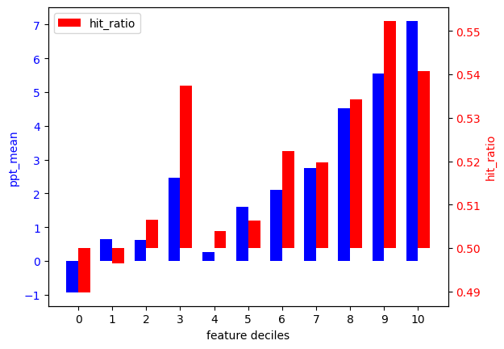
plot_grouped_statistics(get_group(df, "_250us_notional_ss_decile"))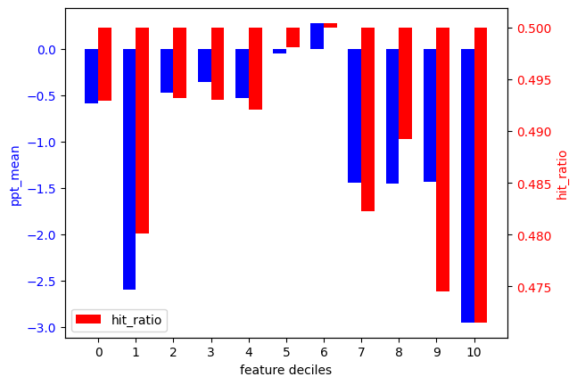
feature_name = "_250us_notional_os_decile"
fig, ax = plt.subplots(figsize=(10, 6))
for i in range(1, 11):
df.query(f"{feature_name} == {i}").groupby(
lambda x: x.date()
).pnl_to_close.mean().plot(ax=ax, label=f"decile {i}")
plt.legend()
plt.show()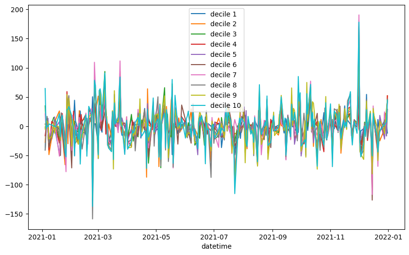
feature_name = "_250us_notional_os_decile"
fig, ax = plt.subplots(figsize=(10, 6))
for i in range(1, 11):
df.query(f"{feature_name} == {i}").groupby(
lambda x: x.date()
).pnl_to_close.sum().cumsum().plot(ax=ax, label=f"decile {i}")
plt.legend()
plt.show()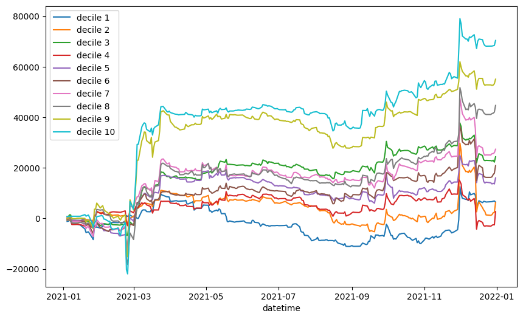
feature_name = "_250us_notional_os_decile"
fig, ax = plt.subplots(figsize=(10, 6))
for i in range(1, 11):
df.query(f"{feature_name} == {i}").groupby(
lambda x: x.date()
).pnl_to_close.mean().cumsum().plot(ax=ax, label=f"decile {i}")
plt.legend()
plt.show()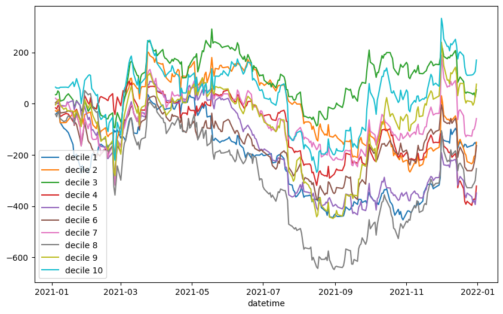
for i in range(1, 11):
sharpe = (
df.query(f"{feature_name} == {i}").pnl_to_close.mean()
/ df.query(f"{feature_name} == {i}").pnl_to_close.std()
)
print(f"sharpe for decile {i}: {sharpe}")sharpe for decile 1: 0.01131299019947174
sharpe for decile 2: 0.010575027888550928
sharpe for decile 3: 0.040854689142390745
sharpe for decile 4: 0.004544291490442815
sharpe for decile 5: 0.027448700970349613
sharpe for decile 6: 0.03433001638137391
sharpe for decile 7: 0.04454075665938627
sharpe for decile 8: 0.07699561228596234
sharpe for decile 9: 0.09154139206805635
sharpe for decile 10: 0.1163105720546142# TODO: denoise by suctracting SPOOS returndf_grouped = df.groupby(df.index.date)["pnl_to_close"].sum()
df_grouped.plot(title="Average PNL (bps) by Day")<Axes: title={'center': 'Average PNL (bps) by Day'}>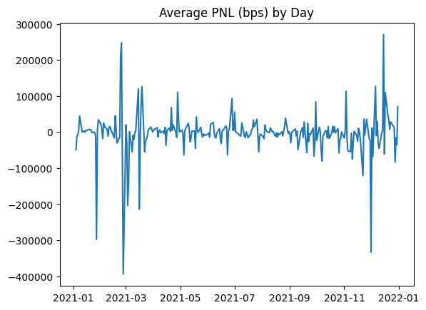
df_grouped[df_grouped > 200_000]2021-02-23 210520.562122
2021-02-24 247849.271511
2021-12-15 270619.406684
Name: pnl_to_close, dtype: float64df_grouped[df_grouped < -200_000]2021-01-27 -297916.178854
2021-02-26 -393937.111535
2021-03-03 -203526.073030
2021-03-16 -213817.381550
2021-12-01 -333587.389163
Name: pnl_to_close, dtype: float64OFI
def plot_count_histograms_per_tag(df, feature_name) -> None:
X = pd.concat(
[
df.query(f"{feature_name} == {i}").resample("5min").size()
for i in range(0, 11)
],
axis=1,
).fillna(0)
for column in X.columns:
x = X[column]
# filter non-iso
x = x[x > 0]
plt.figure(figsize=(3, 2))
plt.hist(x, bins=np.arange(x.min(), x.max()), density=True)
plt.title(f"Histogram of {column}")
plt.xlabel(column)
plt.ylabel("Frequency")
plt.show()plot_count_histograms_per_tag(df, "_250us_notional_os_decile")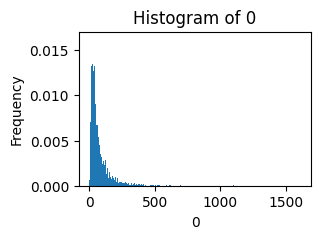
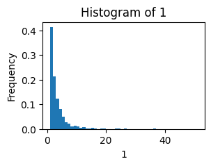
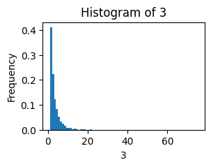
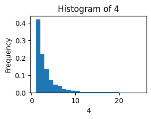
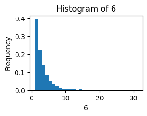
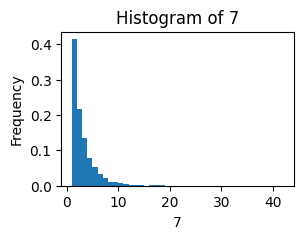

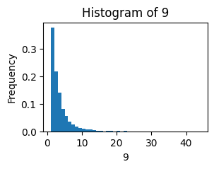
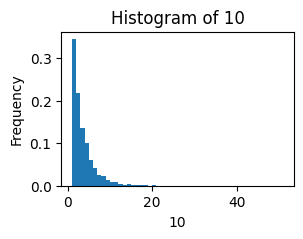
def compute_log_returns2(mid):
zz = pd.DataFrame(mid)
markouts_str = ["30S", "1min", "2min"]
Markout = namedtuple("Markout", ["str", "int"])
markouts = [Markout(x, markout_to_int(x)) for x in markouts_str]
for markout in markouts:
zz[f"_{markout.str}"] = zz.mid.shift(-markout.int)
logs = np.log(zz)
logs = logs.resample("5min", label="right", closed="right").last()
# not sure how to drop all resampled buckets where there was a NaN before
# for now simply drop last row of resampled dataframe
logs = logs.iloc[:-1]
markouts_columns = logs.filter(regex="^_").columns.to_list()
for markout_column in markouts_columns:
logs[markout_column] = logs[markout_column] - logs["mid"]
# markouts_columns
# markouts_columns = logs.filter(regex="^_").columns.to_list()
# for markout_column in markouts_columns:
# logs[markout_column] = logs[markout_column] - logs['mid']
logs["contemp"] = logs.mid - logs.mid.shift(1)
logs.dropna(inplace=True)
logs = logs.drop("mid", axis=1)
return logscompute_log_returns(df.mid)| _30S | _1min | _2min | contemp | |
|---|---|---|---|---|
| datetime | ||||
| 2021-01-04 09:40:00 | -0.000519 | -0.000445 | -0.000519 | -0.001631 |
| 2021-01-04 09:45:00 | -0.000074 | -0.000074 | -0.000149 | -0.002154 |
| 2021-01-04 09:50:00 | -0.000074 | -0.000074 | -0.000149 | 0.000297 |
| 2021-01-04 09:55:00 | 0.000670 | 0.000670 | 0.000596 | -0.001934 |
| 2021-01-04 10:00:00 | 0.000075 | 0.000075 | 0.000075 | -0.001640 |
| ... | ... | ... | ... | ... |
| 2021-12-31 15:35:00 | 0.000064 | 0.000000 | -0.000064 | -0.001536 |
| 2021-12-31 15:40:00 | -0.000064 | -0.000064 | 0.000000 | -0.000705 |
| 2021-12-31 15:45:00 | -0.000064 | -0.000064 | -0.000064 | 0.000320 |
| 2021-12-31 15:50:00 | 0.000000 | -0.000064 | -0.000449 | -0.000705 |
| 2021-12-31 15:55:00 | 0.000000 | -0.000064 | -0.000064 | -0.003340 |
18426 rows × 4 columns
compute_log_returns2(df.mid)| _30S | _1min | _2min | contemp | |
|---|---|---|---|---|
| datetime | ||||
| 2021-01-04 09:40:00 | -0.000519 | -0.000445 | -0.000519 | -0.001631 |
| 2021-01-04 09:45:00 | -0.000074 | -0.000074 | -0.000149 | -0.002154 |
| 2021-01-04 09:50:00 | -0.000074 | -0.000074 | -0.000149 | 0.000297 |
| 2021-01-04 09:55:00 | 0.000670 | 0.000670 | 0.000596 | -0.001934 |
| 2021-01-04 10:00:00 | 0.000075 | 0.000075 | 0.000075 | -0.001640 |
| ... | ... | ... | ... | ... |
| 2021-12-31 15:35:00 | 0.000064 | 0.000000 | -0.000064 | -0.001536 |
| 2021-12-31 15:40:00 | -0.000064 | -0.000064 | 0.000000 | -0.000705 |
| 2021-12-31 15:45:00 | -0.000064 | -0.000064 | -0.000064 | 0.000320 |
| 2021-12-31 15:50:00 | 0.000000 | -0.000064 | -0.000449 | -0.000705 |
| 2021-12-31 15:55:00 | 0.000000 | -0.000064 | -0.000064 | -0.003340 |
18426 rows × 4 columns
X = pd.concat(
[compute_ofi(df.query(f"_250us_notional_os_decile == {i}")) for i in range(0, 11)],
axis=1,
)
X = X.fillna(0) # for no order flow, set 0 OFI
X.columns = [f"_{i}" for i in range(11)]
Y = compute_log_returns2(df.mid)
X, Y = restrict_common_index(X, Y)
run_regressions(X, Y)| r2 | coef | intercept | |
|---|---|---|---|
| target_markout | |||
| _30S | 0.001811 | [2.200118744539078e-05, -3.6208686711013614e-0... | 0.0 |
| _1min | 0.001893 | [2.6182811554683554e-05, -4.04457648403342e-06... | 0.0 |
| _2min | 0.001680 | [2.9314378749474886e-05, -2.590898591698459e-0... | 0.0 |
| contemp | 0.015981 | [-0.00025494788194808634, -3.750410431682322e-... | 0.0 |
X = pd.concat(
[compute_ofi(df.query(f"_250us_notional_os_decile == {i}")) for i in range(0, 11)],
axis=1,
)
X = X.fillna(0) # for no order flow, set 0 OFI
X.columns = [f"_{i}" for i in range(11)]
Y = compute_log_returns2(df.mid)
X, Y = restrict_common_index(X, Y)
X = sm.add_constant(X)
# Y = Y.contemp
Y = Y._1min
model = sm.OLS(Y, X)
results = model.fit()
results.summary()| Dep. Variable: | _1min | R-squared: | 0.002 |
| Model: | OLS | Adj. R-squared: | 0.001 |
| Method: | Least Squares | F-statistic: | 3.193 |
| Date: | Tue, 21 Nov 2023 | Prob (F-statistic): | 0.000239 |
| Time: | 14:28:56 | Log-Likelihood: | 1.0592e+05 |
| No. Observations: | 18426 | AIC: | -2.118e+05 |
| Df Residuals: | 18414 | BIC: | -2.117e+05 |
| Df Model: | 11 | ||
| Covariance Type: | nonrobust |
| coef | std err | t | P>|t| | [0.025 | 0.975] | |
| const | 3.282e-06 | 7.42e-06 | 0.442 | 0.658 | -1.13e-05 | 1.78e-05 |
| _0 | 2.392e-05 | 1.51e-05 | 1.585 | 0.113 | -5.66e-06 | 5.35e-05 |
| _1 | -3.565e-06 | 1.48e-05 | -0.241 | 0.809 | -3.25e-05 | 2.54e-05 |
| _2 | -3.361e-06 | 1.43e-05 | -0.235 | 0.814 | -3.14e-05 | 2.47e-05 |
| _3 | -2.284e-05 | 1.43e-05 | -1.603 | 0.109 | -5.08e-05 | 5.1e-06 |
| _4 | 1.13e-05 | 1.41e-05 | 0.801 | 0.423 | -1.64e-05 | 3.89e-05 |
| _5 | 2.346e-05 | 1.41e-05 | 1.660 | 0.097 | -4.24e-06 | 5.12e-05 |
| _6 | -3.896e-05 | 1.44e-05 | -2.703 | 0.007 | -6.72e-05 | -1.07e-05 |
| _7 | 3.936e-06 | 1.43e-05 | 0.275 | 0.783 | -2.41e-05 | 3.19e-05 |
| _8 | -2.099e-05 | 1.46e-05 | -1.438 | 0.151 | -4.96e-05 | 7.63e-06 |
| _9 | -5.749e-05 | 1.5e-05 | -3.832 | 0.000 | -8.69e-05 | -2.81e-05 |
| _10 | 7.132e-06 | 1.56e-05 | 0.458 | 0.647 | -2.34e-05 | 3.77e-05 |
| Omnibus: | 9515.212 | Durbin-Watson: | 1.992 |
| Prob(Omnibus): | 0.000 | Jarque-Bera (JB): | 56763414.673 |
| Skew: | 0.621 | Prob(JB): | 0.00 |
| Kurtosis: | 274.907 | Cond. No. | 3.10 |
Notes:
[1] Standard Errors assume that the covariance matrix of the errors is correctly specified.
def plot_ofi_histograms_per_tag(df, feature_name) -> None:
X = pd.concat(
[compute_ofi(df.query(f"{feature_name} == {i}")) for i in range(0, 11)], axis=1
)
X = X.fillna(0) # for no order flow, set 0 OFI
X.columns = [f"_{i}" for i in range(11)]
Y = compute_log_returns(df.mid)
X, Y = restrict_common_index(X, Y)
for column in X.columns:
plt.figure(figsize=(3, 2))
plt.hist(X[column], bins=30, density=True)
plt.title(f"Histogram of {column}")
plt.xlabel(column)
plt.ylabel("Frequency")
plt.show()plot_ofi_histograms_per_tag(df, "_250us_notional_ss_decile")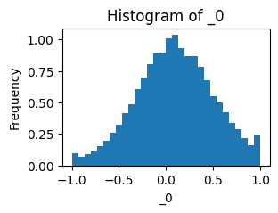
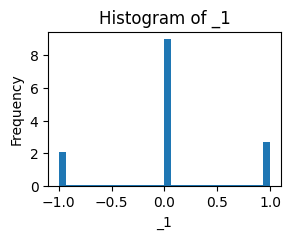
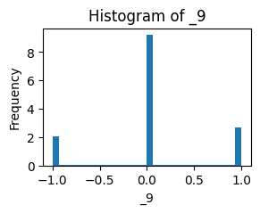
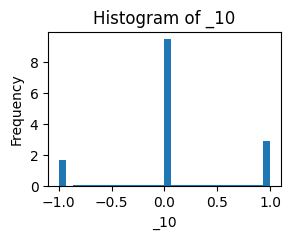
# unconditional ofi
X = compute_ofi(df)
X = X.fillna(0) # for no order flow, set 0 OFI
Y = compute_log_returns2(df.mid)
X, Y = restrict_common_index(X, Y)
X = sm.add_constant(X)
# Y = Y.contemp
Y = Y._1min
model = sm.OLS(Y, X)
results = model.fit()
results.summary()| Dep. Variable: | _1min | R-squared: | 0.000 |
| Model: | OLS | Adj. R-squared: | 0.000 |
| Method: | Least Squares | F-statistic: | 1.101 |
| Date: | Tue, 21 Nov 2023 | Prob (F-statistic): | 0.294 |
| Time: | 14:29:16 | Log-Likelihood: | 1.0590e+05 |
| No. Observations: | 18426 | AIC: | -2.118e+05 |
| Df Residuals: | 18424 | BIC: | -2.118e+05 |
| Df Model: | 1 | ||
| Covariance Type: | nonrobust |
| coef | std err | t | P>|t| | [0.025 | 0.975] | |
| const | 1.898e-05 | 5.89e-06 | 3.222 | 0.001 | 7.43e-06 | 3.05e-05 |
| ofi | 1.606e-05 | 1.53e-05 | 1.049 | 0.294 | -1.39e-05 | 4.6e-05 |
| Omnibus: | 9944.354 | Durbin-Watson: | 1.989 |
| Prob(Omnibus): | 0.000 | Jarque-Bera (JB): | 57145617.692 |
| Skew: | 0.766 | Prob(JB): | 0.00 |
| Kurtosis: | 275.819 | Cond. No. | 2.72 |
Notes:
[1] Standard Errors assume that the covariance matrix of the errors is correctly specified.
Preliminary evidence groupby by quantile by year
fig, ax = plt.subplots(figsize=(10, 6))
for i in range(0, 11):
df.query(f"_500us_notional_os_decile == {i}").pnl_to_close.cumsum().plot(
ax=ax, label=f"decile {i}"
)
plt.legend()
plt.show()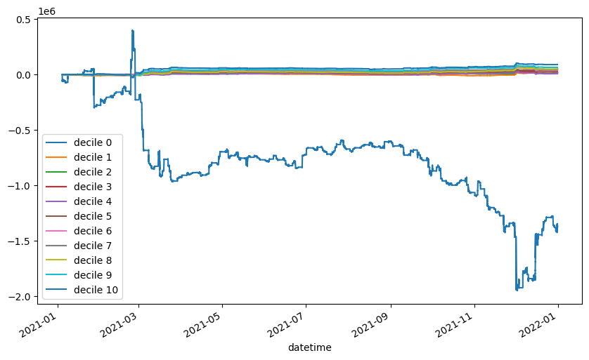
fig, ax = plt.subplots(figsize=(10, 6))
for i in range(1, 11):
df.query(f"_500us_notional_os_decile == {i}").pnl_to_close.cumsum().plot(
ax=ax, label=f"decile {i}"
)
plt.legend()
plt.show()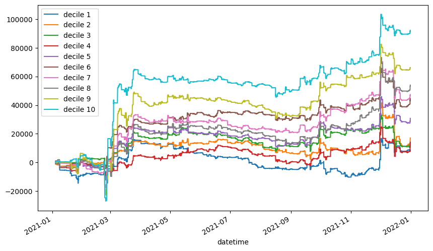
df.eval("ret = pnl_to_close / 1e4", inplace=True)df1 = df.query(f"_500us_notional_os_decile == 10").ret.copy(deep=True)
daily_returns = df1.groupby(df1.index.date).mean()
daily_returns.mean() / daily_returns.std()0.01860449561186662fig, ax = plt.subplots(figsize=(10, 6))
for i in range(1, 11):
df.query(f"_500us_notional_os_decile == {i}").ret.cumprod().plot(
ax=ax, label=f"decile {i}"
)
plt.legend()
plt.show()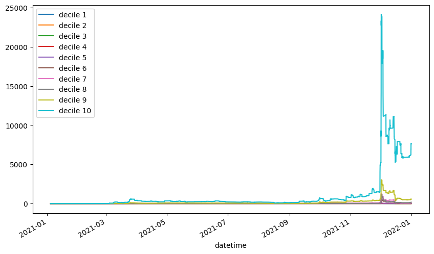
fig, ax = plt.subplots(figsize=(10, 6))
for i in range(1, 11):
df.query(f"_500us_notional_os_decile == {i}").pnl_to_close.cumsum().plot(
ax=ax, label=f"decile {i}"
)
plt.legend()
plt.show()OFIs
df.mid.resample("5min").last().shift(1)datetime
2021-01-04 09:30:00 NaN
2021-01-04 09:35:00 67.505
2021-01-04 09:40:00 67.395
2021-01-04 09:45:00 67.250
2021-01-04 09:50:00 67.270
...
2021-12-31 15:35:00 78.050
2021-12-31 15:40:00 77.995
2021-12-31 15:45:00 78.020
2021-12-31 15:50:00 77.965
2021-12-31 15:55:00 77.705
Freq: 5T, Name: mid, Length: 104046, dtype: float64df.mid.resample("5min").last()datetime
2021-01-04 09:30:00 67.505
2021-01-04 09:35:00 67.395
2021-01-04 09:40:00 67.250
2021-01-04 09:45:00 67.270
2021-01-04 09:50:00 67.140
...
2021-12-31 15:35:00 77.995
2021-12-31 15:40:00 78.020
2021-12-31 15:45:00 77.965
2021-12-31 15:50:00 77.705
2021-12-31 15:55:00 77.685
Freq: 5T, Name: mid, Length: 104046, dtype: float64Y| _30S | _1min | _2min | contemp | |
|---|---|---|---|---|
| datetime | ||||
| 2021-01-04 09:35:00 | -0.000519 | -0.000519 | -0.000667 | 0.001631 |
| 2021-01-04 09:40:00 | -0.000519 | -0.000445 | -0.000519 | 0.002154 |
| 2021-01-04 09:45:00 | -0.000074 | -0.000074 | -0.000149 | -0.000297 |
| 2021-01-04 09:50:00 | -0.000074 | -0.000074 | -0.000149 | 0.001934 |
| 2021-01-04 09:55:00 | 0.000670 | 0.000670 | 0.000596 | 0.001640 |
| ... | ... | ... | ... | ... |
| 2021-12-31 15:30:00 | 0.000000 | 0.000064 | 0.000128 | 0.001536 |
| 2021-12-31 15:35:00 | 0.000064 | 0.000000 | -0.000064 | 0.000705 |
| 2021-12-31 15:40:00 | -0.000064 | -0.000064 | 0.000000 | -0.000320 |
| 2021-12-31 15:45:00 | -0.000064 | -0.000064 | -0.000064 | 0.000705 |
| 2021-12-31 15:50:00 | 0.000000 | -0.000064 | -0.000449 | 0.003340 |
18426 rows × 4 columns
np.log(67.470) - np.log(67.360)0.0016316847052628702df.mid.resample("5min").first()datetime
2021-01-04 09:30:00 67.695
2021-01-04 09:35:00 67.470
2021-01-04 09:40:00 67.360
2021-01-04 09:45:00 67.245
2021-01-04 09:50:00 67.265
...
2021-12-31 15:35:00 78.055
2021-12-31 15:40:00 77.990
2021-12-31 15:45:00 78.015
2021-12-31 15:50:00 77.965
2021-12-31 15:55:00 77.705
Freq: 5T, Name: mid, Length: 104046, dtype: float64Y| _30S | _1min | _2min | contemp | |
|---|---|---|---|---|
| datetime | ||||
| 2021-01-04 09:40:00 | -0.000519 | -0.000445 | -0.000519 | -0.001631 |
| 2021-01-04 09:45:00 | -0.000074 | -0.000074 | -0.000149 | -0.002154 |
| 2021-01-04 09:50:00 | -0.000074 | -0.000074 | -0.000149 | 0.000297 |
| 2021-01-04 09:55:00 | 0.000670 | 0.000670 | 0.000596 | -0.001934 |
| 2021-01-04 10:00:00 | 0.000075 | 0.000075 | 0.000075 | -0.001640 |
| ... | ... | ... | ... | ... |
| 2021-12-31 15:35:00 | 0.000064 | 0.000000 | -0.000064 | -0.001536 |
| 2021-12-31 15:40:00 | -0.000064 | -0.000064 | 0.000000 | -0.000705 |
| 2021-12-31 15:45:00 | -0.000064 | -0.000064 | -0.000064 | 0.000320 |
| 2021-12-31 15:50:00 | 0.000000 | -0.000064 | -0.000449 | -0.000705 |
| 2021-12-31 15:55:00 | 0.000000 | -0.000064 | -0.000064 | -0.003340 |
18426 rows × 4 columns
X.sample(20)| ofi | |
|---|---|
| datetime | |
| 2021-12-17 12:50:00 | 0.099842 |
| 2021-11-11 12:35:00 | 0.149293 |
| 2021-08-18 13:25:00 | 0.537679 |
| 2021-07-02 13:00:00 | 0.808090 |
| 2021-04-15 09:55:00 | 0.028968 |
| 2021-02-11 12:25:00 | -0.518424 |
| 2021-04-29 13:35:00 | 0.471068 |
| 2021-05-06 12:30:00 | -0.837211 |
| 2021-02-26 09:55:00 | 0.379111 |
| 2021-11-15 14:20:00 | 0.465241 |
| 2021-05-03 15:20:00 | 0.346192 |
| 2021-09-03 15:50:00 | 0.225279 |
| 2021-01-04 10:30:00 | 0.048287 |
| 2021-07-06 10:15:00 | -0.019906 |
| 2021-07-13 12:00:00 | -0.447236 |
| 2021-08-30 12:05:00 | -0.393038 |
| 2021-02-08 10:15:00 | 0.558504 |
| 2021-04-01 14:15:00 | 0.390543 |
| 2021-12-08 14:40:00 | -0.361169 |
| 2021-08-19 13:55:00 | 0.194927 |
X| ofi | |
|---|---|
| datetime | |
| 2021-01-04 09:40:00 | -0.215316 |
| 2021-01-04 09:45:00 | 0.181602 |
| 2021-01-04 09:50:00 | -0.032230 |
| 2021-01-04 09:55:00 | 0.489251 |
| 2021-01-04 10:00:00 | 0.701882 |
| ... | ... |
| 2021-12-31 15:35:00 | 0.121631 |
| 2021-12-31 15:40:00 | -0.351283 |
| 2021-12-31 15:45:00 | -0.159085 |
| 2021-12-31 15:50:00 | -0.175439 |
| 2021-12-31 15:55:00 | 0.090304 |
18426 rows × 1 columns
X| ofi | |
|---|---|
| datetime | |
| 2021-01-04 09:40:00 | -0.215316 |
| 2021-01-04 09:45:00 | 0.181602 |
| 2021-01-04 09:50:00 | -0.032230 |
| 2021-01-04 09:55:00 | 0.489251 |
| 2021-01-04 10:00:00 | 0.701882 |
| ... | ... |
| 2021-12-31 15:35:00 | 0.121631 |
| 2021-12-31 15:40:00 | -0.351283 |
| 2021-12-31 15:45:00 | -0.159085 |
| 2021-12-31 15:50:00 | -0.175439 |
| 2021-12-31 15:55:00 | 0.090304 |
18426 rows × 1 columns
X = compute_ofi(df)
X = pd.DataFrame(X) # tmp fix
Y = compute_log_returns(df.mid)
X, Y = restrict_common_index(X, Y)
# print(X)
# print(Y)
run_regressions(X, Y)| r2 | coef | intercept | |
|---|---|---|---|
| target_markout | |||
| _30S | -0.000536 | [2.5592530391572006e-05] | 0.0 |
| _1min | -0.000504 | [2.881596606563757e-05] | 0.0 |
| _2min | -0.000627 | [3.1450230298814306e-05] | 0.0 |
| contemp | 0.014343 | [-0.00029700015237814586] | 0.0 |
X = pd.concat(
[compute_ofi(df.query(f"_500us_notional_os_decile == {i}")) for i in range(0, 11)],
axis=1,
)
X = X.fillna(0) # for no order flow, set 0 OFI
X.columns = range(11)
Y = compute_log_returns(df.mid)
X, Y = restrict_common_index(X, Y)
run_regressions(X, Y)| r2 | coef | intercept | |
|---|---|---|---|
| target_markout | |||
| _30S | 0.001481 | [2.2768590911369735e-05, 2.9548178006308924e-0... | 0.000006 |
| _1min | 0.001482 | [2.6745891593117772e-05, 2.889654969636313e-05... | 0.000007 |
| _2min | 0.001649 | [2.6859770789570454e-05, 3.4577257730876217e-0... | 0.000011 |
| contemp | 0.015877 | [-0.0002389747605278782, -3.221983993141733e-0... | -0.000004 |
X.columns = range(11)
run_regressions()| 0 | 1 | 2 | 3 | 4 | 5 | 6 | 7 | 8 | 9 | 10 | |
|---|---|---|---|---|---|---|---|---|---|---|---|
| datetime | |||||||||||
| 2021-01-04 09:35:00 | -0.213995 | -1.000000 | -1.000000 | NaN | 1.000000 | -1.000000 | NaN | NaN | NaN | NaN | NaN |
| 2021-01-04 09:40:00 | -0.088624 | 0.000000 | 0.000000 | -0.600000 | -1.000000 | -1.000000 | NaN | NaN | -1.000000 | NaN | NaN |
| 2021-01-04 09:45:00 | 0.208393 | 0.000000 | 1.000000 | 0.000000 | 1.000000 | -1.000000 | NaN | NaN | 0.000000 | NaN | -1.000000 |
| 2021-01-04 09:50:00 | -0.152088 | 1.000000 | 0.000000 | -1.000000 | 1.000000 | 0.000000 | NaN | NaN | 1.000000 | NaN | 0.000000 |
| 2021-01-04 09:55:00 | 0.489251 | 0.000000 | 0.000000 | 0.000000 | 0.000000 | 0.000000 | NaN | NaN | 0.000000 | NaN | 0.000000 |
| ... | ... | ... | ... | ... | ... | ... | ... | ... | ... | ... | ... |
| 2021-12-31 15:40:00 | -0.170790 | 0.000000 | 0.000000 | 0.000000 | -1.000000 | -1.000000 | 0.000000 | 0.000000 | 0.000000 | 0.000000 | 0.000000 |
| 2021-12-31 15:45:00 | 0.069259 | -0.373041 | -0.666667 | -1.000000 | -0.987780 | -1.000000 | -1.000000 | 0.000000 | -1.000000 | 0.000000 | 0.000000 |
| 2021-12-31 15:50:00 | 0.131204 | -1.000000 | -1.000000 | -1.000000 | 0.000000 | 0.000000 | -1.000000 | -0.985838 | -1.000000 | 0.000000 | 0.000000 |
| 2021-12-31 15:55:00 | 0.118661 | -0.356322 | -0.561905 | -1.000000 | -0.776970 | -0.634286 | 0.324921 | -0.673004 | 0.064639 | -1.000000 | 0.000000 |
| 2021-12-31 16:00:00 | 0.034843 | -0.090909 | -0.702823 | -0.693051 | 0.555556 | NaN | 0.855648 | 0.904123 | -0.221790 | 0.671803 | -0.293305 |
28597 rows × 11 columns
Old stuff
QUANTILE = 0.95
col_name = "_500us_distinct_tickers"
col_name_clip = col_name + "_clip"df[col_name_clip] = df[col_name].clip(upper=df[col_name].quantile(QUANTILE))grouped_df = (
df[["hit_ratio", "pnl_to_close", col_name_clip]]
.groupby(by=col_name_clip)
.agg(
ppt_mean=("pnl_to_close", "mean"),
ppt_std=("pnl_to_close", "std"),
hit_ratio=("hit_ratio", "mean"),
)
)df.columnsIndex(['time', 'event', 'order_id', 'size', 'price', 'direction',
'ask_price_1', 'bid_price_1', 'ticker', 'mid', '_250us_neighbors',
'_500us_neighbors', '_250us_distinct_tickers_ss_bf',
'_250us_distinct_tickers_ss_af', '_250us_distinct_tickers_os_bf',
'_250us_distinct_tickers_os_af', '_250us_notional_ss_bf',
'_250us_notional_ss_af', '_250us_notional_os_bf',
'_250us_notional_os_af', '_250us_num_trades_ss_bf',
'_250us_num_trades_ss_af', '_250us_num_trades_os_bf',
'_250us_num_trades_os_af', '_500us_distinct_tickers_ss_bf',
'_500us_distinct_tickers_ss_af', '_500us_distinct_tickers_os_bf',
'_500us_distinct_tickers_os_af', '_500us_notional_ss_bf',
'_500us_notional_ss_af', '_500us_notional_os_bf',
'_500us_notional_os_af', '_500us_num_trades_ss_bf',
'_500us_num_trades_ss_af', '_500us_num_trades_os_bf',
'_500us_num_trades_os_af', 'pnl_to_close', 'hit_ratio',
'_500us_distinct_tickers', '_500us_num_trades',
'_500us_distinct_tickers_clip', '_500us_num_trades_clip'],
dtype='object')grouped_df| ppt_mean | ppt_std | hit_raio | |
|---|---|---|---|
| _500us_distinct_tickers_clip | |||
| 0 | -0.620705 | 62.241559 | 0.492495 |
| 1 | -1.154729 | 60.229855 | 0.488880 |
| 2 | -0.983373 | 59.119667 | 0.490208 |
| 3 | -1.211530 | 61.456763 | 0.483649 |
| 4 | 0.284174 | 60.475169 | 0.499092 |
grouped_df = (
df[["hit_ratio", "pnl_to_close", col_name_clip]]
.groupby(by=col_name_clip)
.agg(
ppt_mean=("pnl_to_close", "mean"),
ppt_std=("pnl_to_close", "std"),
hit_ratio=("hit_ratio", "mean"),
)
)QUANTILE = 0.95
col_name = "_500us_num_trades"
col_name_clip = col_name + "_clip"df[col_name_clip] = df[col_name].clip(upper=df[col_name].quantile(QUANTILE))grouped_df = (
df[["hit_ratio", "pnl_to_close", col_name_clip]]
.groupby(by=col_name_clip)
.agg(
ppt_mean=("pnl_to_close", "mean"),
ppt_std=("pnl_to_close", "std"),
hit_ratio=("hit_ratio", "mean"),
)
)grouped_df| ppt_mean | ppt_std | hit_ratio | |
|---|---|---|---|
| _500us_num_trades_clip | |||
| 0 | -0.620705 | 62.241559 | 0.492495 |
| 1 | -0.951186 | 59.917935 | 0.490033 |
| 2 | -0.552256 | 59.514261 | 0.496018 |
| 3 | -0.552811 | 59.919713 | 0.492704 |
| 4 | -1.243655 | 60.074425 | 0.485892 |
| 5 | -0.166191 | 58.707417 | 0.499487 |
| 6 | -0.618547 | 59.863505 | 0.488867 |
| 7 | -0.146460 | 60.773337 | 0.501561 |
| 8 | -0.332109 | 61.497333 | 0.477329 |
| 9 | -0.791676 | 60.327070 | 0.498238 |
| 10 | -0.663020 | 57.377079 | 0.499149 |
| 11 | -1.440645 | 61.716678 | 0.482853 |